貝氏決策理論導論：把「最可能」變成數學
▼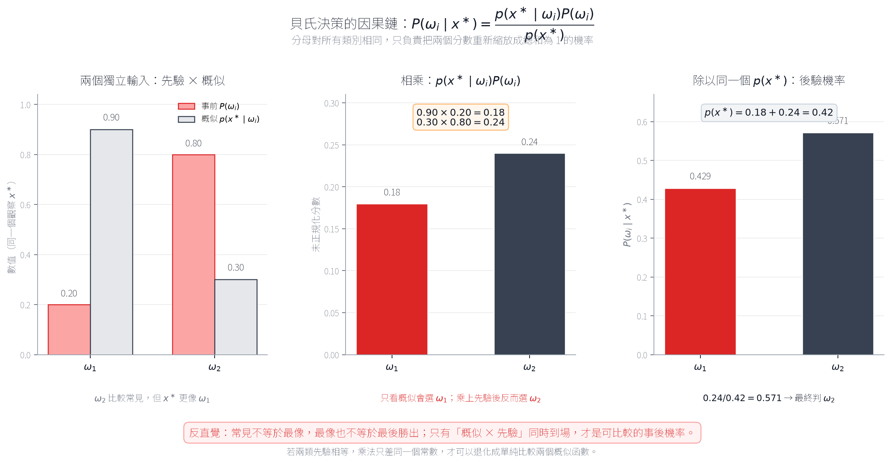
AI 生圖可用：重繪此示意圖的提示詞（結構化）
WHAT: Create a three-stage quantitative educational chart for Bayes decision theory. Use one observed feature vector x* and two classes. Show separate prior probability bars P(omega_i) and class-conditional likelihood bars p(x*|omega_i), then a clearly visible multiplication stage producing the unnormalized scores p(x*|omega_i)P(omega_i), and finally a normalization stage producing posterior probabilities P(omega_i|x*). Use a concrete numerical example such as priors 0.20 and 0.80 with likelihoods 0.90 and 0.30. WHY: The causal mechanism is that posterior probability is not obtained by choosing the most common class or the class whose likelihood is largest in isolation. Both independent inputs must multiply before the common evidence p(x*) can normalize them. The counter-intuitive result should be visible: the likelihood alone favors omega_1, the prior alone favors omega_2, and their product can make omega_2 win. The denominator is shared, so it changes scale but not ranking. MUST show: - A single observed x* shared by every stage. - Distinct geometric encodings for prior, likelihood, product, and posterior. - The multiplication operation and the actual numeric products 0.18 and 0.24. - The evidence calculation p(x*) = 0.18 + 0.24 = 0.42. - Final posterior values approximately 0.429 and 0.571, with the winning class visibly determined by the product rather than either input alone. - A causal arrow or alignment that makes the two inputs converge into one score. AVOID: Do not draw a noun-to-box flowchart with no quantitative encoding. Do not show only the Bayes formula without bars or numbers, do not silently use unequal denominators for the classes, and do not imply that prior or likelihood alone is the Bayes decision. Avoid decorative AI imagery and unexplained symbols. STYLE: Clean scientific matplotlib infographic, white background, #dc2626 accent with grayscale, precise bars and annotations, readable Chinese typography, and a strong visual multiplication-to-normalization flow.
一句話：分類的核心問題其實只有一句話——給定觀察到的特徵向量 $\boldsymbol{x}$，這個樣本屬於哪一類的機率最大？貝氏決策理論就是把「最可能」這個直覺，翻譯成可以計算的數學式。
為什麼從機率出發：特徵向量之所以會有隨機變動，一部分是量測雜訊，一部分是同一類別本身的個體差異（上一章已經談過）。既然變動是隨機的，最自然的做法就是用機率去描述「這個 $\boldsymbol{x}$ 屬於類別 $\omega_i$」的可能性，也就是事後機率（a posteriori probability） $P(\omega_i\mid\boldsymbol{x})$。對 $M$ 類問題，我們對每個類別都算一個 $P(\omega_i\mid\boldsymbol{x})$，$i=1,\dots,M$，誰的值最大就分到誰。
怎麼算：事後機率不能直接量到，但可以用貝氏定理（Bayes rule）從兩個比較容易取得的量算出來：
- 事前機率（a priori probability） $P(\omega_i)$：不看任何特徵，單純這一類在母體中出現的機率，可用訓練集裡各類別筆數的比例 $P(\omega_i)\approx N_i/N$ 估計。
- 類別條件機率密度（class-conditional pdf，或稱概似函數 likelihood） $p(\boldsymbol{x}\mid\omega_i)$：假設你已經知道樣本屬於 $\omega_i$，特徵 $\boldsymbol{x}$ 會怎麼分布。
貝氏定理把兩者接起來： $$ P(\omega_i\mid\boldsymbol{x})=\frac{p(\boldsymbol{x}\mid\omega_i)P(\omega_i)}{p(\boldsymbol{x})},\qquad p(\boldsymbol{x})=\sum_{i=1}^{M}p(\boldsymbol{x}\mid\omega_i)P(\omega_i) $$
分母 $p(\boldsymbol{x})$ 對所有類別都一樣，不影響「誰最大」的比較，所以實務上常直接比較分子：$p(\boldsymbol{x}\mid\omega_i)P(\omega_i)$ 誰大就分誰。若兩類事前機率相等，比較甚至簡化成單純比較概似函數 $p(\boldsymbol{x}\mid\omega_1)$ 與 $p(\boldsymbol{x}\mid\omega_2)$ 誰大。這一整章接下來的所有分類器，本質上都是在想辦法算出或估計這兩個關麵量：$P(\omega_i)$ 與 $p(\boldsymbol{x}\mid\omega_i)$。
貝氏決策規則裡，比較 $P(\omega_1\mid\boldsymbol{x})$ 與 $P(\omega_2\mid\boldsymbol{x})$ 時，為什麼可以忽略分母 $p(\boldsymbol{x})$？
決策區域與誤判機率 $P_e$
▼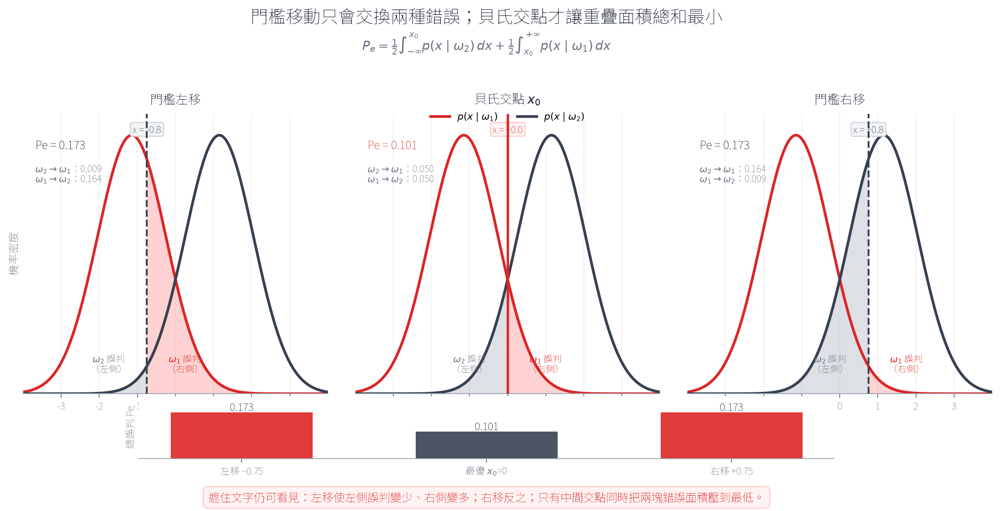
AI 生圖可用：重繪此示意圖的提示詞（結構化）
WHAT: Create a three-panel quantitative plot of two overlapping one-dimensional class-conditional probability density curves. Let the equal-prior classes have omega_1 on the left and omega_2 on the right. Use the same curves in all panels, but place the decision threshold left of the density intersection, exactly at the intersection x0, and right of it. Shade the two error tails on the wrong side of each threshold and add a bottom comparison of the exact total error Pe for all three thresholds. WHY: The causal mechanism is the tradeoff between two error areas: moving the threshold left reduces one kind of error while increasing the other, and moving it right does the reverse. The counter-intuitive lesson is that a visually plausible shift cannot make both errors smaller; the Bayes rule chooses the density intersection because the sum of the two weighted overlap areas is minimal. MUST show: - Identical p(x|omega_1) and p(x|omega_2) curves in all three panels. - A visibly shifted threshold on each side of the exact intersection x0. - Separate shaded regions for omega_2 misclassified on the left and omega_1 misclassified on the right. - Numeric false-positive, false-negative, and total Pe values computed from the normal CDF, not invented labels. - A comparison bar or annotation showing the middle Bayes threshold has the smallest total error. - The formula Pe = 0.5 times the two wrong-side integrals, with the shared equal-prior assumption visible. AVOID: Do not draw only one threshold, hide the error regions, or imply that moving the line eliminates overlap. Do not change the distributions between panels, use arbitrary error numbers, or replace the curves with a box-and-arrow vocabulary diagram. Avoid a claim that Pe becomes zero when the densities overlap. STYLE: Clean flat scientific matplotlib plot, white background, #dc2626 accent with grayscale, high-contrast shaded tails, precise threshold lines, readable Chinese typography, and textbook-level quantitative clarity.
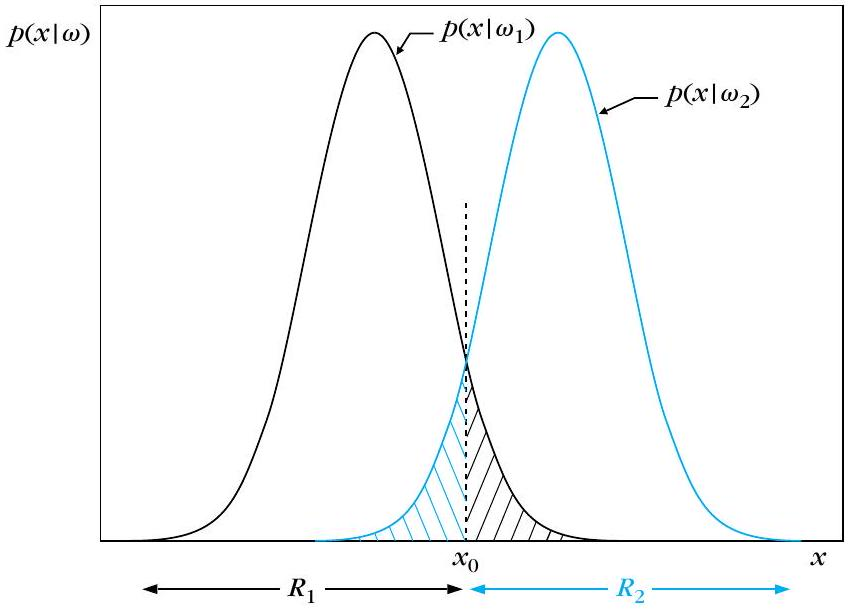
一句話：貝氏分類規則會把特徵空間切成 $R_1, R_2,\dots$ 幾個決策區域，但只要兩類的機率密度有重疊，就一定會有誤判——貝氏規則能做到的是把誤判機率壓到最小，不是壓到零。
兩類等機率的簡單情況：若 $P(\omega_1)=P(\omega_2)$，決策規則簡化成比較 $p(x\mid\omega_1)$ 與 $p(x\mid\omega_2)$；圖上兩條曲線的交點 $x_0$ 就是決策門檻，門檻左邊判 $\omega_1$（區域 $R_1$）、右邊判 $\omega_2$（區域 $R_2$）。誤判機率是兩條曲線在「錯誤那一側」下方的面積和： $$ P_e=\frac{1}{2}\int_{-\infty}^{x_0}p(x\mid\omega_2)\,dx+\frac{1}{2}\int_{x_0}^{+\infty}p(x\mid\omega_1)\,dx $$
證明貝氏規則最優（一般化到任意先驗）：把 $R_1,R_2$ 換成一般記號，誤判機率是 $$ P_e=P(\boldsymbol{x}\in R_2,\omega_1)+P(\boldsymbol{x}\in R_1,\omega_2)=\int_{R_2}P(\omega_1\mid\boldsymbol{x})p(\boldsymbol{x})\,d\boldsymbol{x}+\int_{R_1}P(\omega_2\mid\boldsymbol{x})p(\boldsymbol{x})\,d\boldsymbol{x} $$ 利用 $R_1\cup R_2$ 覆蓋整個空間這個事實代換一次，可以整理成 $$ P_e=P(\omega_1)-\int_{R_1}\big(P(\omega_1\mid\boldsymbol{x})-P(\omega_2\mid\boldsymbol{x})\big)p(\boldsymbol{x})\,d\boldsymbol{x} $$ 要讓 $P_e$ 最小，就要讓被減去的積分項最大——也就是只要 $P(\omega_1\mid\boldsymbol{x})\gt P(\omega_2\mid\boldsymbol{x})$ 的地方全部劃進 $R_1$。這正是貝氏規則本身！所以貝氏規則不是「憑感覺合理」，而是可證明的最優解。推廣到 $M$ 類，一樣是「$P(\omega_i\mid\boldsymbol{x})\gt P(\omega_j\mid\boldsymbol{x})\ \forall j\neq i$ 就分到 $\omega_i$」，一樣最小化誤判機率。
操作說明與正確結果基準
高斯解析解：$P_e = P(\omega_2)\,\Phi\left(\dfrac{x_0-\mu_2}{\sigma_2}\right) + P(\omega_1)\left[1 - \Phi\left(\dfrac{x_0-\mu_1}{\sigma_1}\right)\right]$，其中 $\Phi(z) = \dfrac{1}{2}\left[1 + \text{erf}\left(\dfrac{z}{\sqrt{2}}\right)\right]$
本例 $\mu_1 = -1.0, \mu_2 = 1.0, \sigma_1 = \sigma_2 = 1.0, P(\omega_1) = P(\omega_2) = 0.5$。理論最優門檻 $x_0^* = 0.0$，對應最小誤判率 $P_e^* = \Phi(-1.0) \approx 0.1587$（15.87%）。
兩個等機率類別的 pdf 曲線有重疊區域，貝氏分類器可以把誤判機率降到多少？
風險最小化與損失矩陣：不是所有錯誤都一樣嚴重
▼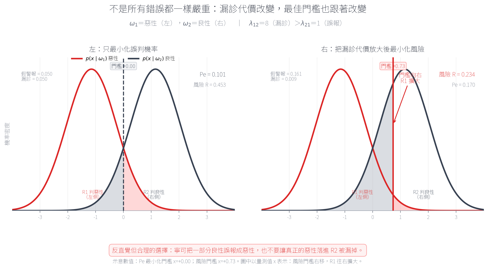
AI 生圖可用：重繪此示意圖的提示詞（結構化）
WHAT: Create a two-panel quantitative comparison using the same malignant and benign class-conditional density curves. Put malignant omega_1 on the left and benign omega_2 on the right. In the left panel use the threshold that minimizes ordinary error probability. In the right panel use a threshold shifted right on this measurement axis so the malignant decision region R1 expands. Show the unequal loss values lambda_12 = 8 for missing malignant disease and lambda_21 = 1 for a false alarm, with the weighted risk calculated from the shaded error areas. WHY: The causal mechanism is that the decision objective changes from counting all mistakes equally to weighting their consequences. A larger cost for a missed malignant case makes the system accept more false alarms in exchange for fewer misses. The counter-intuitive but rational turn is that a classifier can deliberately lower ordinary accuracy while lowering expected medical harm. MUST show: - Identical malignant/benign density curves in both panels. - The error-minimizing threshold and the risk-minimizing threshold, with the latter visibly shifted right and R1 visibly enlarged. - Separate shaded false-alarm and miss regions, plus their numeric masses. - The unequal loss values and a numeric weighted-risk readout. - A clear annotation saying that some benign cases are accepted as false alarms to protect against missed malignant cases. - A note distinguishing the original measurement-axis shift from the likelihood-ratio threshold convention if both are referenced. AVOID: Do not treat false positives and false negatives as equally costly, do not show the risk threshold moving in the wrong direction for a left-hand malignant class, and do not imply that a lower Pe is always the correct medical objective. Avoid a generic loss-matrix box with no density geometry. STYLE: Clean scientific matplotlib infographic, white background, #dc2626 accent with grayscale, precise Gaussian curves and shaded tails, restrained annotations, readable Chinese typography, and high-stakes decision clarity.
一句話：把惡性腫瘤誤診為良性，跟把良性誤診為惡性，代價天差地遠——貝氏決策理論用損失矩陣（loss matrix） $L$ 把「錯誤的嚴重程度」量化進決策規則裡，而不是像 $P_e$ 那樣一視同仁。
兩類情況：令 $\omega_1$＝惡性腫瘤、$\omega_2$＝良性腫瘤，$\lambda_{12}$ 是「$\omega_1$ 誤判成 $\omega_2$」的懲罰、$\lambda_{21}$ 是反過來的懲罰。因為漏掉惡性腫瘤後果嚴重，我們會設 $\lambda_{12}\gt \lambda_{21}$。要最小化的不再是 $P_e$，而是加權後的風險 $$ r=\lambda_{12}P(\omega_1)\int_{R_2}p(\boldsymbol{x}\mid\omega_1)\,d\boldsymbol{x}+\lambda_{21}P(\omega_2)\int_{R_1}p(\boldsymbol{x}\mid\omega_2)\,d\boldsymbol{x} $$
一般化到 $M$ 類：損失矩陣 $L$ 在 $(k,i)$ 位置放 $\lambda_{ki}$，代表「真實是 $\omega_k$ 卻判成 $\omega_i$」的代價（對角線 $\lambda_{kk}$ 通常設 0）。每個區域算一個「條件風險」 $$ l_i\equiv\sum_{k=1}^{M}\lambda_{ki}\,p(\boldsymbol{x}\mid\omega_k)P(\omega_k) $$ 把 $\boldsymbol{x}$ 分到 $l_i$ 最小的那個 $i$，就能讓整體平均風險最小。若把 $\lambda_{ki}=1-\delta_{ki}$（對錯只罰 1、罰 0，不分輕重），風險最小化就退化回原本的誤判機率最小化——Bayes 誤判機率最小化只是風險最小化在「損失矩陣是 0/1」時的特例。
兩類的等效寫法（概似比檢定）：假設 $\lambda_{ii}=0$，決策可以整理成一個門檻檢定，稱作概似比檢定（likelihood ratio test）： $$ l_{12}\equiv\frac{p(\boldsymbol{x}\mid\omega_1)}{p(\boldsymbol{x}\mid\omega_2)}\ \gtrless\ \frac{P(\omega_2)}{P(\omega_1)}\cdot\frac{\lambda_{21}-\lambda_{22}}{\lambda_{12}-\lambda_{11}} $$ 若 $\lambda_{21}\gt \lambda_{12}$（誤判 $\omega_2$ 的樣本更嚴重），門檻右側的比值變小，等於把原本的門檻 $x_0$ 往左移，擴大判給 $\omega_2$ 的區域 $R_2$——這正好符合直覺：對後果嚴重的錯誤更保守。
操作說明與正確結果基準
2. 提高漏診懲罰 $\lambda_{21}$ 時門檻自動左移，擴大惡性判決區；
3. 總風險 $R$ 在此門檻下達到全局極小值。
一維高斯解析解（$\mu_1=1.0, \mu_2=-1.0, \sigma^2=1.0, P_1=P_2=0.5, \lambda_{11}=\lambda_{22}=0$）： $$x_0^* = \dfrac{1}{2} \ln\left(\dfrac{\lambda_{12}}{\lambda_{21}}\right)$$ 總期望風險公式：$R = \lambda_{12} P(\omega_2) \int_{x_0^*}^{\infty} p(x\mid\omega_2)\,dx + \lambda_{21} P(\omega_1) \int_{-\infty}^{x_0^*} p(x\mid\omega_1)\,dx$
在惡性/良性腫瘤的例子中，若 $\lambda_{21}\gt \lambda_{12}$（誤把惡性判為良性的懲罰更大），決策門檻會怎麼變？
決策超曲面與判別函數
▼AI 生圖可用：重繪此示意圖的提示詞（結構化）
WHAT: Create a wide three-part inline SVG infographic. First show one observation x* with three posterior probabilities as actual bars, ordered omega_1 > omega_2 > omega_3. Next show several strictly increasing functions f(p), such as p, square-root p, and p cubed, as rising curves acting on the same probability axis. Finally show two class-score curves crossing before and after a monotonic transform; the vertical decision boundary must pass through the same crossing in both plots. WHY: The causal mechanism is order preservation: a strictly increasing f changes the numerical scale but never reverses which posterior probability is larger. Therefore maximizing g_i(x)=f(P(omega_i|x)) is equivalent to maximizing the original posterior, and the equality g_i-g_j=0 occurs at the same observation as P_i-P_j=0. The surprising point is that the score values can look very different while the classifier's decision surface does not move. MUST show: - One shared set of posterior values used as input to every transform. - Rising function curves with no local reversal and visible input/output ranking omega_1 > omega_2 > omega_3. - Two aligned decision plots where the original and transformed curves cross at the same x_b, with matching vertical boundary markers. - The equality relationship g_i-g_j=0 iff P_i-P_j=0. - Geometric arrows and crossing points that carry the argument even if text labels are covered. AVOID: Do not use a decreasing or non-monotonic function, do not show unrelated probability samples in each panel, and do not reduce the idea to a list of terms in boxes. Avoid a generic neural-network or pipeline diagram with no curves, rankings, or preserved crossing. STYLE: Clean offline inline SVG scientific infographic, logical viewBox coordinates, white and light-gray panels, #dc2626 accent with grayscale, crisp curves, arrows and equality markers, readable Chinese typography, and textbook clarity.
一句話：不管是最小化誤判機率還是最小化風險，最終都等於把特徵空間切成 $M$ 塊區域——相鄰兩塊的交界，就是決策曲面（decision surface）。
決策曲面的方程式：對最小誤判機率的情況，$R_i$ 與 $R_j$ 相鄰處的邊界滿足 $$ P(\omega_i\mid\boldsymbol{x})-P(\omega_j\mid\boldsymbol{x})=0 $$ 邊界一側這個差是正的、另一側是負的。
判別函數（discriminant function）：直接處理機率有時數學上不方便，可以改用任何「單調遞增函數 $f(\cdot)$ 作用在 $P(\omega_i\mid\boldsymbol{x})$ 上」的等價函數 $g_i(\boldsymbol{x})\equiv f(P(\omega_i\mid\boldsymbol{x}))$，因為單調函數不會改變「誰大誰小」的順序。分類規則變成： $$ \text{把 } \boldsymbol{x} \text{ 分到 } \omega_i \quad \text{若 } g_i(\boldsymbol{x})\gt g_j(\boldsymbol{x})\ \forall j\neq i $$ 決策曲面則寫成 $g_{ij}(\boldsymbol{x})\equiv g_i(\boldsymbol{x})-g_j(\boldsymbol{x})=0$。
承先啟後：本章接下來會挑一個特別好算的 $f(\cdot)$——對數函數——套進高斯分布，推出判別函數的具體公式（下個知識點）。但貝氏方法有個先天限制：機率密度函數往往很難估計準確。若估計不準，接下來幾章會介紹不透過機率密度、直接用其他準則算決策曲面的替代方案（第 3、4 章），代價是理論上不再保證跟貝氏分類器一樣最優。
判別函數 $g_i(\boldsymbol{x})=f(P(\omega_i\mid\boldsymbol{x}))$ 中，為什麼 $f(\cdot)$ 必須是單調遞增函數？
高斯機率密度函數：一維到多維
▼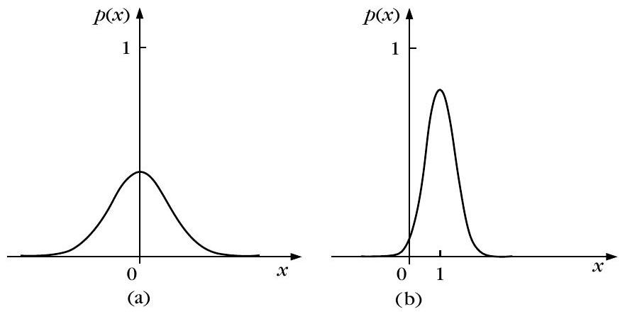
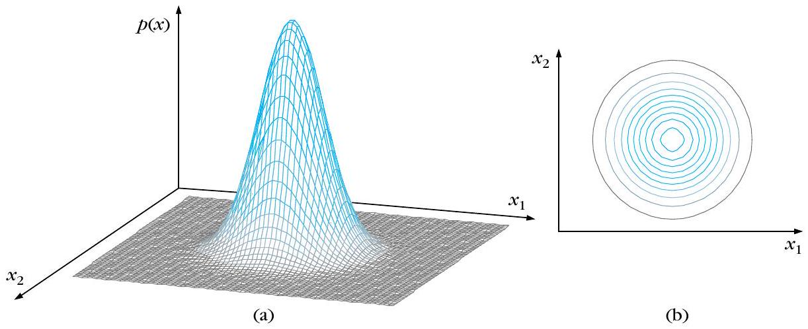
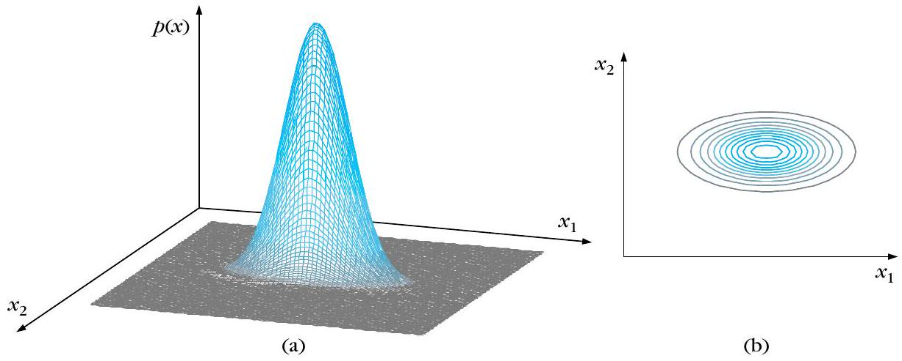
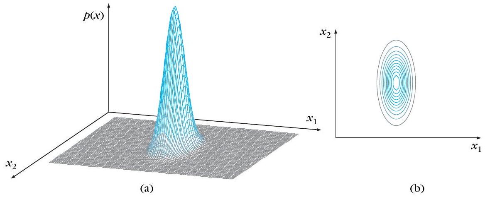
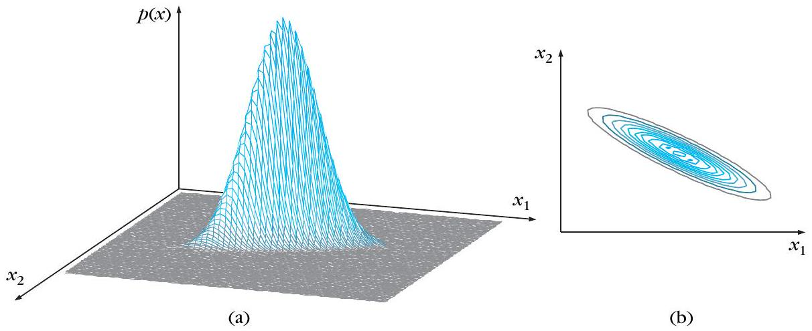
一句話：高斯（常態）分布之所以在樣式識別裡無所不在，一是中央極限定理保證「很多獨立隨機變數加起來會趨近高斯」，二是它的數學運算特別友善（指數、對數一拆就是二次式）。
一維高斯： $$ p(x)=\frac{1}{\sqrt{2\pi}\,\sigma}\exp\!\left(-\frac{(x-\mu)^2}{2\sigma^2}\right) $$ 其中 $\mu=E[x]$ 是均值、$\sigma^2=E[(x-\mu)^2]$ 是變異數。變異數越大，鐘形曲線越寬、越扁；圖形永遠對稱、中心在 $\mu$。
多維高斯：把純量換成向量， $$ p(\boldsymbol{x})=\frac{1}{(2\pi)^{l/2}|\Sigma|^{1/2}}\exp\!\left(-\frac{1}{2}(\boldsymbol{x}-\boldsymbol{\mu})^T\Sigma^{-1}(\boldsymbol{x}-\boldsymbol{\mu})\right)\equiv\mathcal{N}(\boldsymbol{\mu},\Sigma) $$ $\Sigma=E[(\boldsymbol{x}-\boldsymbol{\mu})(\boldsymbol{x}-\boldsymbol{\mu})^T]$ 是共變異數矩陣，對角線是各特徵自己的變異數，非對角線 $\sigma_{12}=E[(x_1-\mu_1)(x_2-\mu_2)]$ 是兩特徵的共變異數（統計相關程度，互相獨立時為 0）。
共變異數決定形狀：在二維空間畫等機率密度曲線（isovalue curve）：
- $\Sigma$ 是對角、$\sigma_1^2=\sigma_2^2$：等值線是正圓，各方向沒有偏好。
- $\Sigma$ 對角但 $\sigma_1^2\gg\sigma_2^2$（或反過來）：等值線是橢圓，沿變異數較大的軸拉長。
- $\Sigma$ 非對角：等值線是任意方向的橢圓，方向與拉伸程度由 $\sigma_1^2,\sigma_2^2,\sigma_{12}$ 共同決定。
以零均值、對角 $\Sigma$ 為例，等值線方程式就是 $$ \frac{x_1^2}{\sigma_1^2}+\frac{x_2^2}{\sigma_2^2}=C $$ 這是一個橢圓，長短軸由變異數決定；更一般的情況（非對角 $\Sigma$），橢圓的主軸方向會對齊 $\Sigma$ 的特徵向量、長度由特徵值決定——這個「共變異數矩陣＝橢圓形狀」的關係，會在後面推馬氏距離時再用到一次。
操作說明與正確結果基準
用一個 2D 高斯分布，把共變異數矩陣如何決定等密度橢圓的方向與長短畫出來。
拖動 $\sigma_1^2$、$\sigma_2^2$ 與 $\sigma_{12}$ 滑桿；$\sigma_{12}$ 會自動限制在合法範圍內。
先改變兩個變異數看橢圓拉長，再改變 $\sigma_{12}$ 看主軸旋轉；讀出特徵向量方向。
橢圓半軸長是 $c\sqrt{\lambda_k}$，主軸方向是 $\Sigma$ 的特徵向量，不是手工估計。
二維高斯分布中，若共變異數矩陣是非對角矩陣，等機率密度曲線會是什麼形狀？
常態分布的貝氏分類器：二次判別函數
▼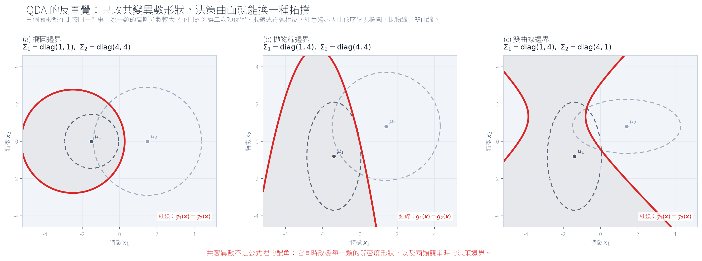
AI 生圖可用：重繪此示意圖的提示詞（結構化）
WHAT: 三面板科學資訊圖，使用同一個二維分類場景比較三組共變異數設定：左為橢圓決策邊界，中為拋物線決策邊界，右為雙曲線決策邊界。每個面板都畫兩個高斯類別的等密度橢圓、兩個均值點、灰階分類區域，以及一條醒目的紅色決策曲線；三面板上方要清楚呈現只有 Σ 的形狀改變。 WHY: 必須傳達 QDA 的反直覺因果：三個任務都只是比較兩個高斯判別分數，但當兩類的共變異數不同時，二次項不會抵銷；共變異數的方向與尺度改變，會讓決策曲面從封閉橢圓切換到拋物線，再切換到雙曲線。圖要讓讀者看到「不是換了分類目標，而是 Σ 改寫了邊界的幾何拓撲」。 MUST show: - 三個並排、可直接比較的二維特徵平面。 - 每個面板的兩個類別均值與各自共變異數等密度橢圓。 - 紅色決策邊界，分別呈現橢圓、拋物線、雙曲線。 - 灰階或淡色分類區域，讓決策邊界把空間切開。 - 面板標籤明確寫出 Σ 的設定與邊界型態。 - 一句視覺化結論：共變異數形狀改變 → 二次項型態改變 → 決策曲面型態改變。 AVOID: - 禁止畫成「高斯分布→QDA→二次曲面」的名詞方框連線圖。 - 禁止三個面板只換標題、實際曲線形狀卻沒有真的計算。 - 禁止把所有決策邊界畫成直線或把 QDA 說成永遠是橢圓。 - 禁止使用公式截圖、外部圖片、外部字體或無法離線渲染的素材。 STYLE: 白底、數值科學繪圖風格；以 #dc2626 紅色強調決策邊界，搭配深灰與淺灰高斯等密度輪廓，座標軸清楚、留白充足、數學感精準但適合零基礎讀者。
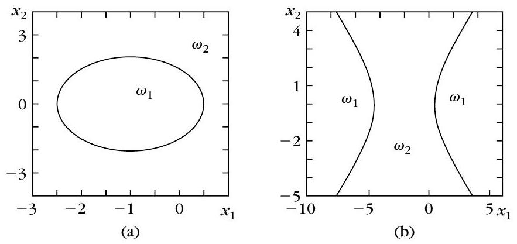
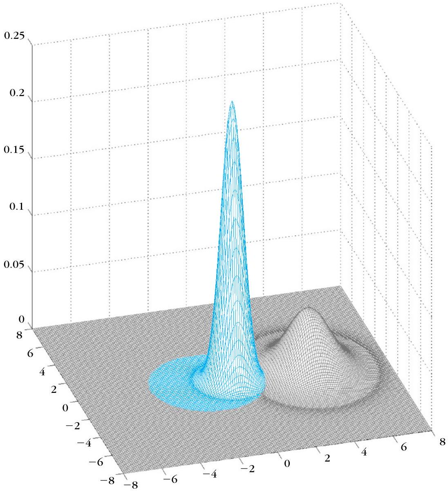
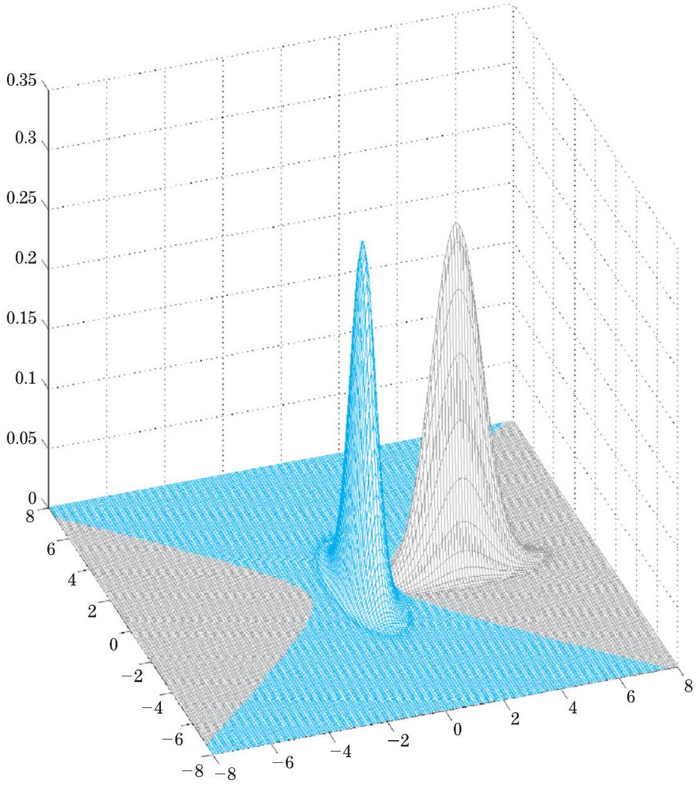
一句話：當每一類的機率密度都是高斯分布時，貝氏判別函數會自動變成一個好算的公式——把高斯 pdf 代進 $g_i(\boldsymbol{x})=\ln(p(\boldsymbol{x}\mid\omega_i)P(\omega_i))$，取對數把指數拆開，就得到
$$ g_i(\boldsymbol{x})=-\frac{1}{2}(\boldsymbol{x}-\boldsymbol{\mu}_i)^T\Sigma_i^{-1}(\boldsymbol{x}-\boldsymbol{\mu}_i)+\ln P(\omega_i)+c_i $$
其中 $c_i=-\frac{l}{2}\ln 2\pi-\frac{1}{2}\ln|\Sigma_i|$ 是常數。展開後，$\boldsymbol{x}$ 的最高次項是 $\boldsymbol{x}^T\Sigma_i^{-1}\boldsymbol{x}$——二次項。這代表：只要各類別的共變異數矩陣不同，決策曲面 $g_i(\boldsymbol{x})-g_j(\boldsymbol{x})=0$ 一般是二次曲面（橢圓、拋物線、雙曲線或成對直線，統稱 quadric），$l\gt 2$ 時稱 hyperquadric。這種「用高斯假設推出的分類器」在統計學裡有個名字：若各類共變異數不同，叫二次判別分析（QDA, Quadratic Discriminant Analysis）；若共變異數相同，會退化成線性（下個知識點的 LDA）。
具體例子：課本給了兩組二維高斯，$\mu_1=[0,0]^T,\mu_2=[4,0]^T$，$\Sigma_1,\Sigma_2$ 都是對角但數值不同——算出的決策曲線是橢圓；換一組 $\mu_2=[3.2,0]^T$、另一組 $\Sigma_1,\Sigma_2$（對角線元素互換大小），決策曲線變成雙曲線。同樣是「兩個高斯分布比大小」，光是共變異數矩陣的形狀不同，決策曲面的幾何型態就完全不同——這正是二次判別函數的威力（也是它的計算負擔：$l$ 維空間裡，每個共變異數矩陣要估計約 $l^2/2$ 個參數，維度一高，需要的訓練資料量會爆炸性成長）。
LDA/QDA 為什麼在實務上好用：雖然真實資料很少真的服從高斯分布，但線性或二次決策曲面通常已經能把特徵空間切得夠好；加上高斯模型的參數估計在統計性質上有優勢（如偏誤-變異數的權衡，後面第 3 章會再談），這使得 LDA、QDA 至今仍是最常用的分類器之一。
操作說明與正確結果基準
比較兩個固定平均值的 2D 高斯分數，觀察兩個共變異數如何改變 $g_1(x)-g_2(x)=0$。
調整類別 1、類別 2 的 $\sigma_1^2$ 與 $\sigma_2^2$；也可按預設組合快速切換。
從橢圓邊界切到拋物線、雙曲線；邊界不是畫出來的裝飾，而是每個網格點即時算出的零等高線。
二次型判別式 $\Delta=B^2-4AC$ 決定曲線型態；$\Sigma_i$ 必須可逆，否則停止並顯示錯誤。
若兩類的共變異數矩陣 $\Sigma_1,\Sigma_2$ 彼此不同，貝氏分類器算出的決策曲面一般是什麼形狀？
決策超平面：共同共變異數的特例
▼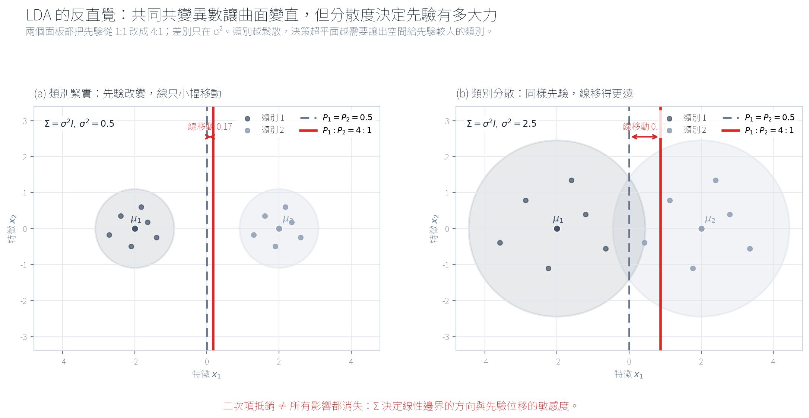
AI 生圖可用：重繪此示意圖的提示詞（結構化）
WHAT: 兩面板數值對比圖，固定兩個類別均值與共同共變異數假設 Σ=σ²I；左面板畫緊實類別，右面板畫分散類別。每一面板都疊加兩條真正計算出的 LDA 決策超平面：均等先驗的灰色虛線，以及把先驗改成 4:1 後的紅色實線，並用雙向箭頭標出兩條線的實際位移量。 WHY: 必須傳達「共同共變異數讓二次項抵銷、邊界變成直線」之後仍有一個反直覺：先驗機率不是只改一個數字，它會把超平面往先驗較小的類別推；而且同樣的先驗改變，在緊實類別只造成小位移，在分散類別卻造成大位移。真正的因果鏈是 Σ 的尺度 → 邊界對先驗的敏感度 → 分類空間的重新分配。 MUST show: - 左右兩個二維特徵平面，共用同一對均值與同一組先驗變化。 - 緊實與分散的類別點雲或協方差範圍，讓 σ² 的差異可視化。 - 灰色虛線表示 P1=P2，紅色實線表示 P1:P2=4:1。 - 每個面板標出真實位移量，讓「敏感度不同」不是口號。 - 均值點、類別區域與超平面清楚可辨。 - 底部總結：二次項抵銷不等於 Σ 的影響消失。 AVOID: - 禁止只畫一條抽象直線並把先驗當成旁邊的文字註解。 - 禁止兩個面板的類別分散度看起來完全相同。 - 禁止暗示先驗大的類別會被切少；正確方向是邊界往先驗較小的類別偏。 - 禁止使用外部圖片、外部字體、裝飾性流程框或沒有數值根據的箭頭。 STYLE: 白底、精準的 matplotlib 科學圖；#dc2626 紅色只用於先驗改變後的超平面與位移箭頭，其他元素以深灰、淺灰和淡色區域呈現，排版像清楚的教科書圖而不是名詞海報。
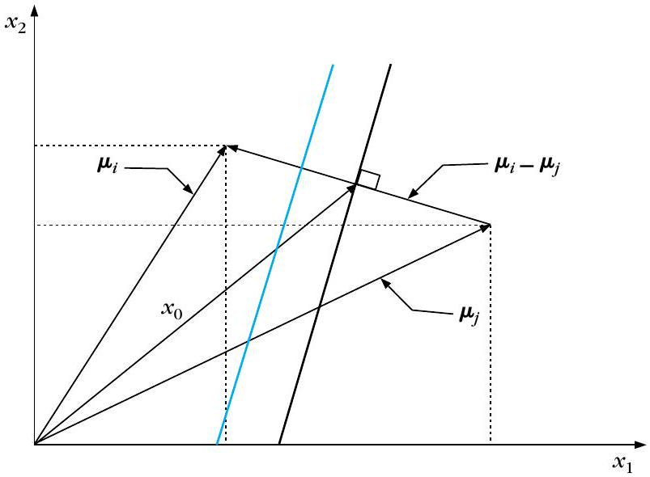
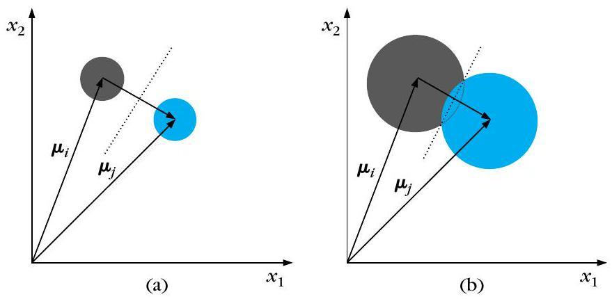
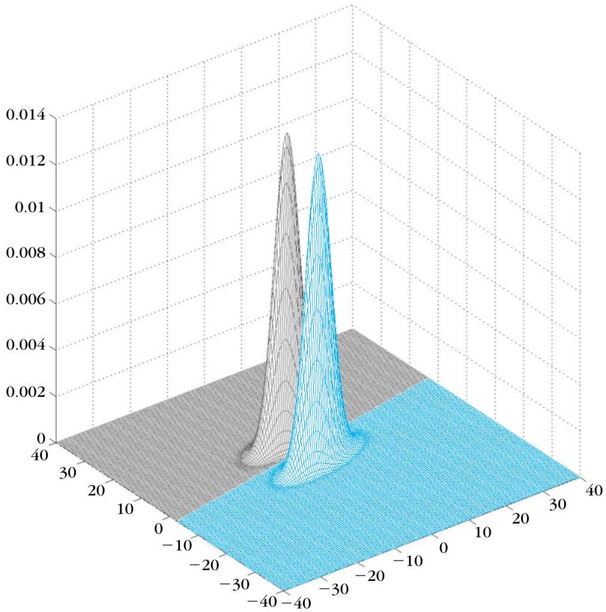
一句話：只要假設所有類別共用同一個共變異數矩陣 $\Sigma_i=\Sigma$，判別函數裡的二次項在相減時會完全抵銷——決策曲面從彎曲的二次曲面「拉直」成超平面（hyperplane），這正是線性判別分析（LDA）的由來。
推導：因為二次項與常數 $c_i$ 對每一類都相同，可以直接省略，判別函數簡化成線性形式 $$ g_i(\boldsymbol{x})=\boldsymbol{w}_i^T\boldsymbol{x}+w_{i0},\qquad \boldsymbol{w}_i=\Sigma^{-1}\boldsymbol{\mu}_i,\qquad w_{i0}=\ln P(\omega_i)-\frac{1}{2}\boldsymbol{\mu}_i^T\Sigma^{-1}\boldsymbol{\mu}_i $$
情況一：$\Sigma=\sigma^2 I$（特徵互不相關、變異數相同）：決策超平面可寫成 $\boldsymbol{w}^T(\boldsymbol{x}-\boldsymbol{x}_0)=0$，其中 $$ \boldsymbol{w}=\boldsymbol{\mu}_i-\boldsymbol{\mu}_j,\qquad \boldsymbol{x}_0=\frac{1}{2}(\boldsymbol{\mu}_i+\boldsymbol{\mu}_j)-\sigma^2\ln\!\left(\frac{P(\omega_i)}{P(\omega_j)}\right)\frac{\boldsymbol{\mu}_i-\boldsymbol{\mu}_j}{\|\boldsymbol{\mu}_i-\boldsymbol{\mu}_j\|^2} $$ 這條超平面垂直於 $\boldsymbol{\mu}_i-\boldsymbol{\mu}_j$。若兩類事前機率相等，超平面剛好通過兩均值連線的中點；若某一類事前機率較大，超平面會往「機率較小的那一類」偏，讓機率大的類別多分到一些空間——先驗機率越懸殊，決策線越往劣勢類別靠。當 $\sigma^2$ 相對 $\|\boldsymbol{\mu}_i-\boldsymbol{\mu}_j\|$ 很小（類別本身很緊實）時，超平面的位置對先驗機率的變化反而不敏感，因為樣本本來就緊緊聚在均值附近，門檻小幅移動幾乎不影響分類結果；反之，若類別分散（變異數大），超平面位置的移動就非常關鍵。
情況二：非對角 $\Sigma$：形式一樣是 $\boldsymbol{w}^T(\boldsymbol{x}-\boldsymbol{x}_0)=0$，但這次 $\boldsymbol{w}=\Sigma^{-1}(\boldsymbol{\mu}_i-\boldsymbol{\mu}_j)$——超平面不再垂直於 $\boldsymbol{\mu}_i-\boldsymbol{\mu}_j$ 本身，而是垂直於它被 $\Sigma^{-1}$「線性變換」過的方向。
操作說明與正確結果基準
固定兩個類別平均值，觀察共同 $\Sigma=\sigma^2I$ 下的線性決策超平面如何移動。
調整 $\sigma^2$ 與先驗對數比；也可切換緊實或分散的預設情境。
把先驗從 1:1 改成 4:1，再分別使用小、大 $\sigma^2$；同樣的先驗改變，線的位移不一樣。
二次項抵銷只保證邊界是直線；先驗仍透過 $\sigma^2\ln(P_1/P_2)$ 改變線的位置。
在 $\Sigma=\sigma^2 I$ 的情況下，若兩類事前機率相等，決策超平面會通過哪一點？
為什麼「類別本身分布很緊實（變異數小）」時，決策超平面的位置對先驗機率變化比較不敏感？
最小距離分類器：歐氏距離與馬氏距離
▼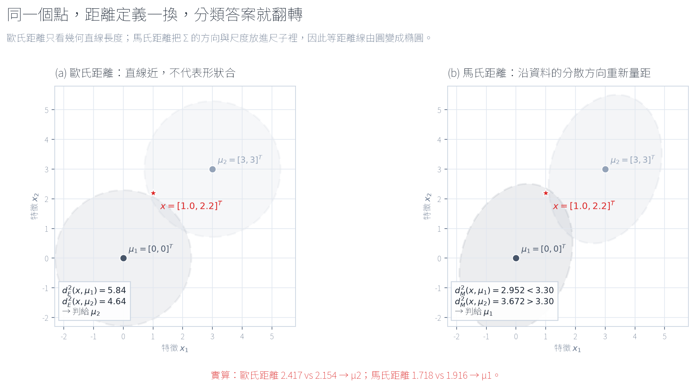
AI 生圖可用：重繪此示意圖的提示詞（結構化）
WHAT: 一張左右對照的二維數值圖，固定 μ1=[0,0]、μ2=[3,3]、x=[1.0,2.2] 與 Σ=[[1.1,0.3],[0.3,1.9]]。左面板用歐氏距離畫兩個以均值為圓心的等距離圓；右面板用同一個 Σ 計算馬氏距離，畫兩個旋轉橢圓等距離線。兩個面板都標出同一個紅色星號資料點、兩個均值，以及距離計算結果。 WHY: 必須傳達全章最反直覺的翻轉：同一個點在歐氏距離下離 μ2 比較近，但在馬氏距離下反而判給 μ1。原因不是點的位置變了，而是馬氏距離把資料的共變異數、相關方向與分散尺度放進距離定義；因此「近」不是只有直線長度，還要問這個方向對資料來說是否罕見。 MUST show: - 左側清楚標出歐氏距離平方 5.84 與 4.64，視覺上判給 μ2。 - 右側清楚標出馬氏距離平方 2.952 與 3.672，視覺上判給 μ1。 - 左面板等距離線是圓，右面板等距離線是依 Σ 旋轉與拉伸的橢圓。 - 紅色星號資料點在兩面板位置完全相同。 - 右側橢圓的方向能看出非對角 Σ 帶來的相關性，而不是只畫水平／垂直圓。 - 底部用一句話明確指出分類答案翻轉。 AVOID: - 禁止把馬氏距離畫成普通圓形或只放一個公式而沒有幾何結果。 - 禁止使用任意示意數字；必須保留指定的均值、資料點與共變異數矩陣。 - 禁止把兩個面板畫成不同資料點，否則看不出「同一點、不同尺」的反直覺。 - 禁止使用外部圖片、外部字體、3D 裝飾或沒有計算依據的分類箭頭。 STYLE: 白底、扁平而精準的 matplotlib 數值資訊圖；以 #dc2626 突出資料點與分類翻轉，搭配深灰／淺灰的圓與橢圓等距離線，保留座標軸、數值註記與足夠留白。
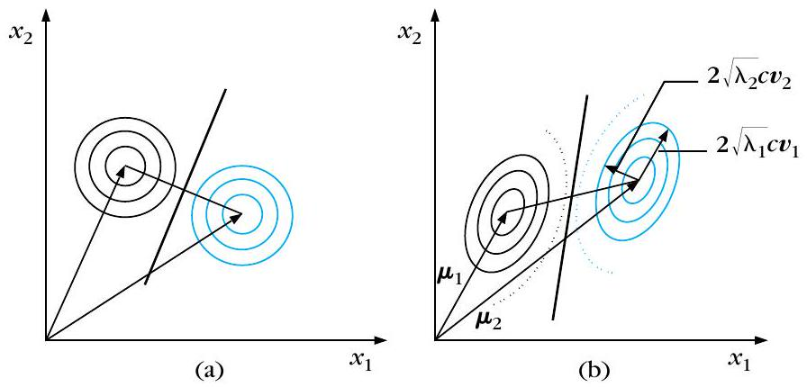
一句話：把等共變異數情況的判別函數 $g_i(\boldsymbol{x})=-\frac{1}{2}(\boldsymbol{x}-\boldsymbol{\mu}_i)^T\Sigma^{-1}(\boldsymbol{x}-\boldsymbol{\mu}_i)$ 換個角度看：讓 $g_i(\boldsymbol{x})$ 最大，等於讓 $\boldsymbol{x}$ 到 $\boldsymbol{\mu}_i$ 的某種「距離」最小——這正是最小距離分類器的由來，等機率先驗（或先驗差異可忽略）時尤其直觀。
情況一：$\Sigma=\sigma^2 I$ → 歐氏距離： $$ d_\epsilon=\|\boldsymbol{x}-\boldsymbol{\mu}_i\| $$ 分類規則就是「離哪個均值點的歐氏距離最近，就判給哪一類」。等距離曲線 $d_\epsilon=c$ 是以 $\mu_i$ 為圓心的正圓（$l$ 維時是超球）。
情況二：非對角 $\Sigma$ → 馬氏距離（Mahalanobis distance）： $$ d_m=\Big((\boldsymbol{x}-\boldsymbol{\mu}_i)^T\Sigma^{-1}(\boldsymbol{x}-\boldsymbol{\mu}_i)\Big)^{1/2} $$ 等距離曲線 $d_m=c$ 是橢圓（不是圓！），因為 $\Sigma$ 可以對角化成 $\Sigma=\Phi\Lambda\Phi^T$（$\Phi$ 是特徵向量矩陣、$\Lambda$ 是特徵值對角矩陣），代入後等距離方程式在新座標系下變成 $$ \frac{(x_1'-\mu_{i1}')^2}{\lambda_1}+\cdots+\frac{(x_l'-\mu_{il}')^2}{\lambda_l}=c^2 $$ 橢圓中心在 $\mu_i$，主軸方向對齊 $\Sigma$ 的特徵向量、長度是 $2\sqrt{\lambda_k}\,c$。
數值範例：兩類共用 $\Sigma=\begin{bmatrix}1.1&0.3\\0.3&1.9\end{bmatrix}$，$\mu_1=[0,0]^T,\mu_2=[3,3]^T$。判斷 $[1.0,2.2]^T$：算出 $d_m^2(\mu_1,\boldsymbol{x})=2.952$、$d_m^2(\mu_2,\boldsymbol{x})=3.672$，馬氏距離較近的是 $\mu_1$，所以分到 $\omega_1$。反直覺之處：若只看普通的歐氏距離，$[1.0,2.2]^T$ 其實離 $[3,3]^T$ 比較近！馬氏距離之所以給出不同答案，是因為它把共變異數的形狀考慮進去了——沿著資料本來就分散較開的方向，「距離」會被自動打折扣。這正是馬氏距離比歐氏距離更適合非球型資料分布的原因。
操作說明與正確結果基準
比較歐氏距離與馬氏距離如何對同一個測試點做最小距離分類。
拖曳畫布上的紅色星號；左右兩個面板會用同一個 $\boldsymbol{x}$ 即時重算。
把點拖到 $[1.0,2.2]^T$ 附近，觀察歐氏距離較近的類別與馬氏距離較近的類別可能不同。
馬氏距離使用真實 $\Sigma^{-1}$；等距離線會沿資料的分散方向拉成橢圓。
承上題的數值範例，若改用「普通的歐氏距離」判斷 $[1.0,2.2]^T$ 該屬於哪一類，結果會跟馬氏距離判斷的結果一致嗎？
最大似然估計（ML）：讓觀察到的資料看起來最合理
▼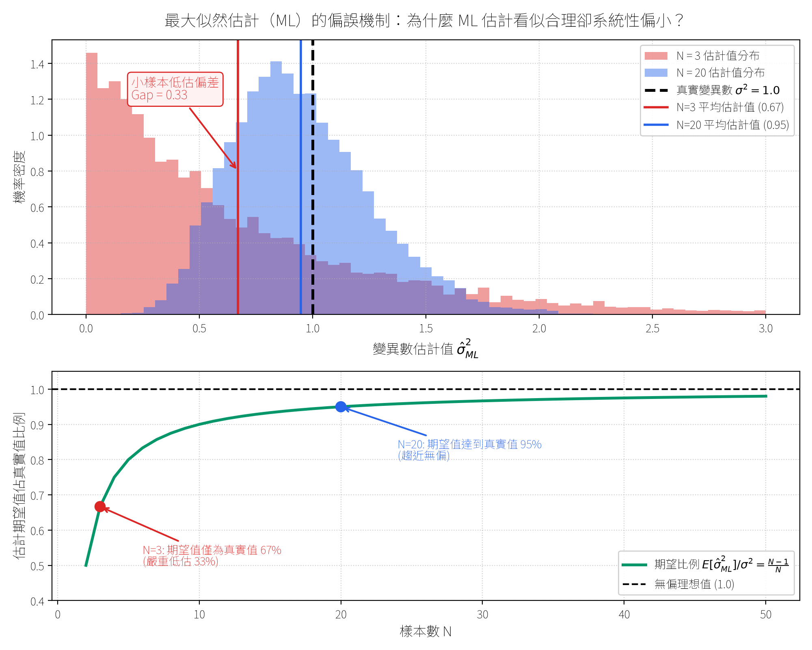
AI 生圖可用：重繪此示意圖的提示詞（結構化）
WHAT: 最大似然估計（ML）在有限樣本下對變異數估計偏誤（Systematic Underestimation Bias）的機制圖解。
WHY: 許多初學者誤以為 ML 估計是最客觀合理的「最佳答案」，卻不明白為什麼 ML 算出來的變異數估計值 $\hat{\sigma}^2_{ML}$ 在小樣本 N 時會系統性偏小 ($E[\hat{\sigma}^2_{ML}] = \frac{N-1}{N}\sigma^2$)。本圖旨在揭示「樣本平均 fit 特定樣本導致偏差」的因果機制。
MUST show:
1. N=3 小樣本估計值的直方圖高峰整體偏左（低於真實變異數 $\sigma^2$），顯現出明顯的低估 Gap。
2. N=20 較大樣本估計值分布收斂並對齊真實變異數 $\sigma^2$。
3. 下方偏誤隨 N 變化的極限趨勢曲線，標註 N=3 時低估 33% 與 N=20 時達到 95% 無偏。
AVOID: 單純印出數學公式 $E[\hat{\sigma}^2] = \frac{N-1}{N}\sigma^2$ 而沒有估計值分布對比與直觀差距標示；避免無數值基礎的抽象名詞連線圖。
STYLE: 專業學術統計風格，雙子圖佈局，搭配紅色 Accent 標註偏誤 Gap 與漸進無偏綠色曲線。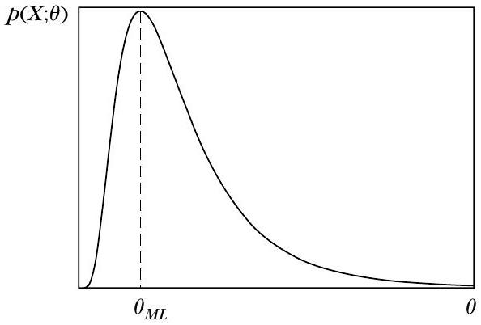
一句話：前面幾個知識點都假設 $p(\boldsymbol{x}\mid\omega_i)$ 的參數（均值、共變異數……）已知，但現實中通常不知道，要從訓練資料估計出來——最大似然估計（Maximum Likelihood, ML）的精神是：找一組參數 $\boldsymbol{\theta}$，讓「觀察到目前這組訓練資料」的機率最大。
設定：假設 $N$ 個訓練樣本 $\boldsymbol{x}_1,\dots,\boldsymbol{x}_N$ 彼此統計獨立，來自同一個帶未知參數 $\boldsymbol{\theta}$ 的分布 $p(\boldsymbol{x};\boldsymbol{\theta})$。聯合機率（概似函數）是 $$ p(X;\boldsymbol{\theta})=\prod_{k=1}^{N}p(\boldsymbol{x}_k;\boldsymbol{\theta}) $$ ML 估計就是找 $\hat{\boldsymbol{\theta}}_{ML}=\arg\max_{\boldsymbol{\theta}}\prod_k p(\boldsymbol{x}_k;\boldsymbol{\theta})$。因為連乘不好微分，取對數變成對數概似函數（log-likelihood） $L(\boldsymbol{\theta})=\ln\prod_k p(\boldsymbol{x}_k;\boldsymbol{\theta})$，讓 $\partial L/\partial\boldsymbol{\theta}=0$ 即可求解。
數值範例一（已知均值，估變異數）：一維高斯、均值 $\mu$ 已知、變異數未知，推導得 $$ \hat{\sigma}^2_{ML}=\frac{1}{N}\sum_{k=1}^{N}(x_k-\mu)^2 $$ 但這個估計對有限的 $N$ 是有偏（biased）的：$E[\hat{\sigma}^2_{ML}]=\frac{N-1}{N}\sigma^2$，$N$ 越小低估越嚴重，$N\to\infty$ 時才趨近真值。
數值範例二（已知共變異數，估均值）：多維高斯、$\Sigma$ 已知、均值未知，推導得 $$ \hat{\boldsymbol{\mu}}_{ML}=\frac{1}{N}\sum_{k=1}^{N}\boldsymbol{x}_k $$ 也就是樣本平均——這符合直覺，但要注意這個「自然的估計法」只在高斯假設下剛好等於 ML 解，換成別的分布不一定成立。
ML 的四個漂亮性質（$N\to\infty$ 時成立）：漸進不偏（估計值的期望趨近真值）、漸進一致（估計值本身的變異趨近 0）、漸進效率（達到 Cramér-Rao 下界，也就是「理論上最小的變異數」）、且估計值的分布趨近高斯。但這些都是漸進性質——$N$ 小的時候，ML 估計可能像範例一那樣有明顯偏誤。
操作說明與正確結果基準
理論期望值：$E[\hat{\sigma}^2_{\text{ML}}] = \dfrac{N-1}{N}\sigma^2 = \dfrac{N-1}{N}$（本例真實 $\sigma^2 = 1.0$）
理論偏誤：$\text{Bias}(\hat{\sigma}^2_{\text{ML}}) = E[\hat{\sigma}^2_{\text{ML}}] - \sigma^2 = -\dfrac{1}{N}$
一維高斯分布中，已知均值、估計變異數的 ML 估計式 $\hat{\sigma}^2_{ML}=\frac{1}{N}\sum(x_k-\mu)^2$，在有限樣本數 $N$ 下有什麼統計性質？
最大後驗機率估計（MAP）：把參數本身也當隨機變數
▼AI 生圖可用：重繪此示意圖的提示詞（結構化）
WHAT: MAP (最大後驗機率估計) 中先驗知識 $\mu_0$ 與樣本數據 $\bar{x}$ 權重拔河的天平機制圖解。
WHY: 初學者容易把 MAP 當作純粹的數學代換，忽視其核心的「數據量 N 動態調節權重」機制。本圖以拔河天平視覺化呈現在 N=1、N=5、N=50 時，樣本拉力如何隨 N 線性放大並拉動估計值 $\hat{\mu}_{MAP}$ 離開 $\mu_0$、向 $\bar{x}$ 靠攏。
MUST show:
1. 三個對比情境 (N=1, N=5, N=50) 的天平傾斜與重量塊大小。
2. 左側先驗 $\mu_0$ 權重固定，右側數據 $\bar{x}$ 權重塊隨 N 放大。
3. 一維數值軸上 $\hat{\mu}_{MAP}$ 指針位置隨 N 移向 $\bar{x}$ 的動態軌跡。
4. 底部區域總結小樣本防禦與大樣本極限 (MAP $\to$ ML) 的因果邏輯。
AVOID: 靜態的「名詞帶框連線圖」；避免未標明 N 的權重變化而失去動態消長的對比感。
STYLE: 向量幾何天平示意風格，搭配漸層權重塊與明亮 Accent 配色，結構清晰且語意明確。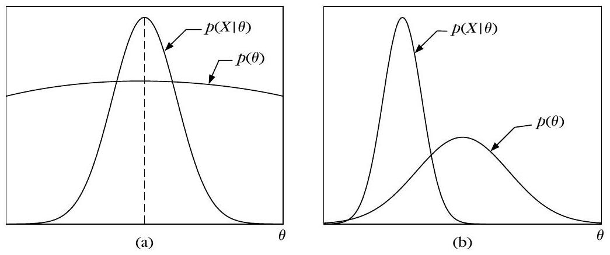
一句話：ML 把 $\boldsymbol{\theta}$ 當成一個「固定但未知」的常數；MAP（Maximum A Posteriori）换了個角度，把 $\boldsymbol{\theta}$ 本身也看成有機率分布的隨機變數，並且假設我們對它已經有些先驗知識 $p(\boldsymbol{\theta})$。
推導：目標是找讓事後機率 $p(\boldsymbol{\theta}\mid X)$ 最大的 $\boldsymbol{\theta}$。用貝氏定理 $p(\boldsymbol{\theta}\mid X)=\dfrac{p(\boldsymbol{\theta})\,p(X\mid\boldsymbol{\theta})}{p(X)}$，因為 $p(X)$ 與 $\boldsymbol{\theta}$ 無關，MAP 估計等價於 $$ \hat{\boldsymbol{\theta}}_{MAP}:\ \frac{\partial}{\partial\boldsymbol{\theta}}\big(p(\boldsymbol{\theta})\,p(X\mid\boldsymbol{\theta})\big)=0 $$ 跟 ML 的差異只在多了 $p(\boldsymbol{\theta})$ 這一項——如果先驗是均勻分布（對所有 $\boldsymbol{\theta}$ 一視同仁）或變化很平緩，MAP 就會退化回 ML。
數值範例（延續上一個知識點的 ML 均值估計）：假設均值 $\boldsymbol{\mu}$ 本身服從高斯先驗 $p(\boldsymbol{\mu})\sim\mathcal{N}(\boldsymbol{\mu}_0,\sigma_\mu^2 I)$，且 $\Sigma=\sigma^2 I$，解出 $$ \hat{\boldsymbol{\mu}}_{MAP}=\frac{\boldsymbol{\mu}_0+\dfrac{\sigma_\mu^2}{\sigma^2}\sum_{k=1}^N\boldsymbol{x}_k}{1+\dfrac{\sigma_\mu^2}{\sigma^2}N} $$ 這是先驗猜測 $\mu_0$ 與樣本平均的一個加權平均。觀察兩種極端：
- 若 $\sigma_\mu^2/\sigma^2\gg 1$（對先驗完全沒信心，先驗分布很寬）：$\hat{\boldsymbol{\mu}}_{MAP}\approx\hat{\boldsymbol{\mu}}_{ML}$，幾乎只看資料。
- 若 $N\to\infty$（資料夠多）：不管先驗多強，$\hat{\boldsymbol{\mu}}_{MAP}$ 也會趨近 ML 解——資料量夠大時，先驗知識的影響會被淹沒。
怎麼記：MAP 就是「ML 加上一份事前經驗當作加權籌碼」，資料少時先驗說話大聲，資料一多，證據（概似函數）自然會壓過先驗。
操作說明與正確結果基準
2. $\sigma_\mu^2$ 極小時 $\mu_{\text{MAP}}$ 被拉向 $\mu_0$；
3. $N$ 很大時先驗被資料淹沒，$\mu_{\text{MAP}} \to \mu_{\text{ML}}$。
其中真實均值 $\mu = 2.0$，已知變異數 $\sigma^2 = 1.0$。當 $\sigma_\mu^2 \to \infty$ 或 $N \to \infty$ 時，$\hat{\mu}_{\text{MAP}} \to \hat{\mu}_{\text{ML}} = \bar{x}$。
在 MAP 估計均值的公式中，若 $N\to\infty$（訓練樣本非常多），$\hat{\mu}_{MAP}$ 會趨近於什麼？
貝氏推論：不只估一個值，而是算出完整的後驗分布
▼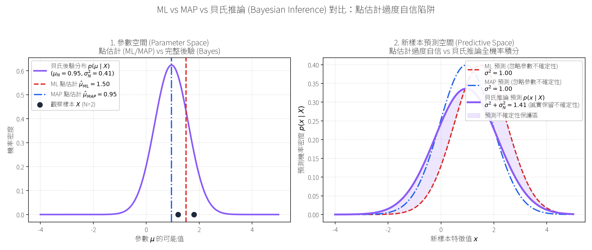
AI 生圖可用：重繪此示意圖的提示詞（結構化）
WHAT: 貝氏推論 (Bayesian Inference) 與點估計 (ML/MAP) 在小樣本下預測不確定性保留的對比圖解。 WHY: 原文 Figure 2.16 展現了後驗分布 $p(\mu \mid X)$ 隨 N 增加而收窄的過程，但未直觀呈現「為何點估計會過度自信」及「貝氏推論如何透過對全參數空間積分，在預測分布 $p(x \mid X)$ 中誠實保留參數不確定性 $\sigma_N^2$」。本圖旨在補足此核心對比機制。 MUST show: 1. 左圖（參數空間）：ML 點估計與 MAP 點估計作為單一數值脈衝，與貝氏完整後驗密度 $p(\mu \mid X)$ 的分佈對比。 2. 右圖（預測空間）：ML 與 MAP 的預測曲線變異數僅為 $\sigma^2$（過度狹窄自信），而貝氏推論預測曲線展現較寬的變異數 $\sigma^2 + \sigma_N^2$。 3. 兩者預測曲線間的紫色陰影區域，標示「預測不確定性保護區」。 AVOID: 重複畫 Figure 2.16 單純呈現 $p(\mu \mid X)$ 隨 N 縮小的圖形；避免無點估計 vs 貝氏推論預測空間差別的單一線條圖。 STYLE: 雙對比子圖佈局，點估計使用虛線/點劃線，貝氏推論使用高飽和度紫色實線與半透明不確定性陰影。
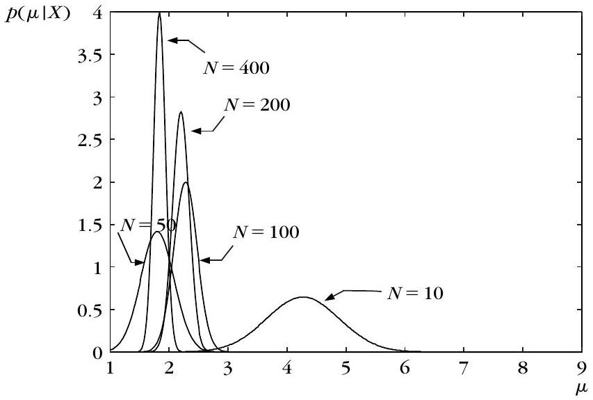
一句話：ML 和 MAP 都只給你「一個」最佳估計值；貝氏推論（Bayesian Inference）換一條路——直接算出我們真正想要的 $p(\boldsymbol{x}\mid X)$（給定訓練資料後，新樣本 $\boldsymbol{x}$ 的完整機率分布），而不是先找一個點估計再代入。
核心公式： $$ p(\boldsymbol{x}\mid X)=\int p(\boldsymbol{x}\mid\boldsymbol{\theta})\,p(\boldsymbol{\theta}\mid X)\,d\boldsymbol{\theta},\qquad p(\boldsymbol{\theta}\mid X)=\frac{p(X\mid\boldsymbol{\theta})p(\boldsymbol{\theta})}{\int p(X\mid\boldsymbol{\theta})p(\boldsymbol{\theta})\,d\boldsymbol{\theta}} $$ 直白地說：$p(\boldsymbol{x}\mid X)$ 是「把所有可能的 $\boldsymbol{\theta}$ 值都代進去算一次 $p(\boldsymbol{x}\mid\boldsymbol{\theta})$，再依照 $\boldsymbol{\theta}$ 有多可能（$p(\boldsymbol{\theta}\mid X)$）加權平均」——不是賭一個 $\boldsymbol{\theta}$，而是把所有可能性都納入考量。多數情況這個積分沒有解析解，得靠數值方法（如 MCMC、Gibbs sampler、Metropolis-Hastings）近似。
一維高斯數值範例：已知變異數 $\sigma^2$、均值 $\mu$ 未知且服從高斯先驗 $\mathcal{N}(\mu_0,\sigma_0^2)$。可以證明 $p(\mu\mid X)$ 本身仍是高斯， $$ \mu_N=\frac{N\sigma_0^2\bar{x}_N+\sigma^2\mu_0}{N\sigma_0^2+\sigma^2},\qquad \sigma_N^2=\frac{\sigma^2\sigma_0^2}{N\sigma_0^2+\sigma^2} $$ 隨著 $N$ 從 1 長到 $\infty$，這串高斯分布的中心從 $\mu_0$ 逐漸移向樣本平均 $\bar{x}_N$、寬度以約 $\sigma^2/N$ 的速度收窄。也就是說，資料越多，我們對 $\mu$ 的把握越集中（後驗越尖）。最後代回去可得 $p(x\mid X)\sim\mathcal{N}(\mu_N,\sigma^2+\sigma_N^2)$——注意變異數是 $\sigma^2+\sigma_N^2$，比單純的 $\sigma^2$ 大，多出來的 $\sigma_N^2$ 正是「我們對 $\mu$ 還不完全確定」所帶來的額外不確定性。
三種方法的收斂關係：當 $p(\boldsymbol{\theta}\mid X)$ 隨著資料增加變得非常尖銳（近似一個脈衝），貝氏推論、MAP、ML 三者會給出幾乎相同的結果——但資料量小的時候，三者可能明顯不同，這時貝氏推論保留的「不確定性資訊」最完整，代價是計算複雜度也最高。
在貝氏推論的一維高斯範例中，$p(x\mid X)$ 的變異數是 $\sigma^2+\sigma_N^2$，比原本已知的 $\sigma^2$ 還要大，這多出來的 $\sigma_N^2$ 代表什麼？
最大熵估計：在給定限制下，選「最不武斷」的分布
▼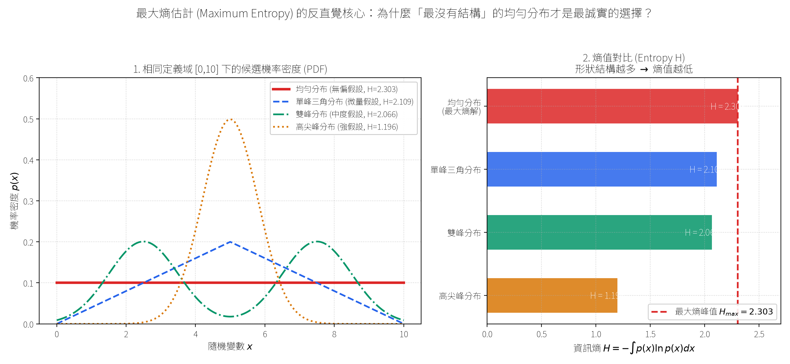
AI 生圖可用：重繪此示意圖的提示詞（結構化）
WHAT: 相同定義域 $[x_1, x_2]$ 下多種候選 PDF（均勻、單峰、雙峰、高尖峰）與其對應資訊熵（Entropy H）的對比圖解。
WHY: 人類直覺常誤以為有結構、有峰值的分布「資訊量比較豐富/比較精確」，但最大熵原理（Maximum Entropy Principle）指出：在僅知定義域的情況下，任何峰值或結構都是未經證實的任意假設。本圖旨在點出「結構越複雜 $\to$ 熵越低 $\to$ 假設越武斷；均勻分布熵最大 $\to$ 是最誠實無偏的選擇」的反直覺轉折。
MUST show:
1. 左側子圖：四種不同形狀的 normalized PDF 曲線疊加（均勻分布使用紅粗實線標示）。
2. 右側子圖：橫向條形圖比較各形狀的熵值 H，均勻分布以 $H_{max} = \ln(x_2 - x_1)$ 登頂。
3. 顯眼標示「形狀結構越多 $\to$ 熵值越低 $\to$ 增加未證實假設」的因果機制。
AVOID: 單純寫出 Lagrange 乘子法求解過程等純文字推導；避免沒有 Entropy 條形對比的單一分布圖。
STYLE: 雙子圖結構，左側為多顏色 PDF 曲線，右側為橫向 Bar Chart，搭配紅色 Accent 突出最大熵解。一句話：如果我們對某個 pdf 幾乎一無所知，只知道幾個限制條件（例如它的定義域、均值、變異數），最大熵原理告訴我們該選哪一個分布：選讓熵（entropy）最大、也就是「最隨機、最不多加任何假設」的那一個。
熵的定義： $$ H=-\int_{\boldsymbol{x}}p(\boldsymbol{x})\ln p(\boldsymbol{x})\,d\boldsymbol{x} $$ 熵越大，代表這個分布越「沒有偏好」、越接近均勻隨機；熵越小，代表分布越集中、越有把握。最大熵估計就是：在滿足已知限制條件的前提下，找 $H$ 最大的 $p(\boldsymbol{x})$。
數值範例：已知隨機變數 $x$ 只在 $[x_1,x_2]$ 區間非零，求最大熵估計。用 Lagrange 乘子法對限制 $\int_{x_1}^{x_2}p(x)\,dx=1$ 求解，最大化 $$ H_L=-\int_{x_1}^{x_2}p(x)(\ln p(x)-\lambda)\,dx $$ 對 $p(x)$ 微分並令其為 0，解得 $\hat p(x)=\exp(\lambda-1)$（常數！），代回限制式解出 $\lambda$，最終 $$ \hat p(x)=\begin{cases}\dfrac{1}{x_2-x_1}, & x_1\le x\le x_2\\[4pt]0,&\text{otherwise}\end{cases} $$ 也就是均勻分布！這完全符合直覺：除了「範圍在 $[x_1,x_2]$」之外我們什麼都不知道，最誠實的做法就是讓範圍內每一點都同等可能，不偏袒任何位置。
延伸（不用推導，記結論即可）：如果除了範圍，還多給「均值」與「變異數」這兩個限制條件，可以證明（見習題 2.30）最大熵估計會變成高斯分布——這給了高斯分布另一個理論支持：在「只知道均值和變異數」的資訊條件下，高斯是最不武斷、最誠實的猜測。這與前面提到的中央極限定理是兩個獨立但互相呼應的理由，說明為什麼高斯分布在統計建模裡如此常見。
只知道隨機變數 $x$ 的定義域是 $[x_1,x_2]$、沒有其他資訊時，最大熵估計得到的 pdf 是什麼分布？
混合模型與 EM 演算法：資料是好幾群高斯疊出來的
▼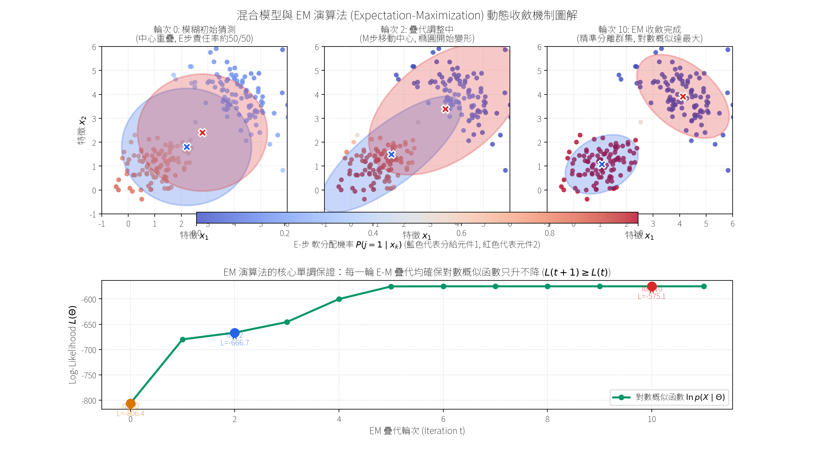
AI 生圖可用：重繪此示意圖的提示詞（結構化）
WHAT: 混合高斯模型 (GMM) 與 EM 演算法在未知資料標籤下「E-步猜測 $\leftrightarrow$ M-步更新」動態疊代與對數概似函數單調收斂過程的圖解。 WHY: 原文 Figure 2.17 僅呈現靜態的 100 點分布與概似函數收斂曲線，缺少 EM 最核心的「動態迴圈」因果機制（E-步計算軟責任率 $\to$ M-步移動中心與調整橢圓 $\to$ 對數概似單調遞增）。本圖旨在呈現 Iter 0, 2, 10 的空間邊界漸進演變與對數概似上升軌跡。 MUST show: 1. 輪次 0、輪次 2、輪次 10 的三階段二維特徵空間散佈圖，點顏色隨 E-步軟分配機率 $P(j \mid x_k)$ 變化。 2. 各輪次 Highlighting 元件中心 (X 標記) 與 2-sigma 橢圓形變過程。 3. 下方對數概似曲線 $L(t)$ 標示 Iter 0, 2, 10 的對應位置，突出「單調只升不降」的收斂保證。 AVOID: 純文字方框寫著 "E-step" "M-step" 的靜態流程圖；避免沒有真實高斯橢圓與責任率顏色變化的示意圖。 STYLE: 上方三張動態輪次二維散佈圖搭配連續色漸層 Colorbar，下方搭配單調遞增對數概似趨勢折線圖。
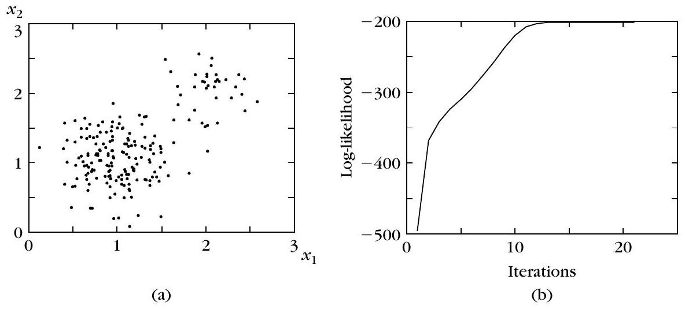
一句話：真實資料常常不是單一個高斯峰，而是好幾個「元件分布」疊加而成——混合模型（mixture model）把 $p(\boldsymbol{x})$ 寫成 $$ p(\boldsymbol{x})=\sum_{j=1}^{J}p(\boldsymbol{x}\mid j)P_j,\qquad \sum_j P_j=1 $$ 問題是：每個樣本 $\boldsymbol{x}_k$ 到底是哪個元件 $j$ 生出來的，我們並不知道——這正是不完整資料（incomplete data）問題，直接對 $\theta$ 做 ML 會因為「標籤缺失」而卡住（未知量以非線性方式糾纏在一起）。
EM 演算法（Expectation-Maximization）的精神：既然不知道每個樣本屬於哪個元件，就先「猜」一個當前參數下，每個樣本屬於各元件的機率 $P(j\mid\boldsymbol{x}_k;\boldsymbol{\Theta}(t))$（E 步），再用這份加權猜測去更新參數讓概似函數最大化（M 步），反覆疊代直到收斂：
- E 步：算 $Q(\boldsymbol{\Theta};\boldsymbol{\Theta}(t))=E[\sum_k\ln p(\boldsymbol{x}_k,j_k;\boldsymbol{\theta})\mid X;\boldsymbol{\Theta}(t)]$。
- M 步：求 $\boldsymbol{\Theta}(t+1)=\arg\max_{\boldsymbol{\Theta}}Q(\boldsymbol{\Theta};\boldsymbol{\Theta}(t))$。
對高斯混合（各元件 $\Sigma_j=\sigma_j^2 I$），M 步有解析解： $$ \boldsymbol{\mu}_j(t{+}1)=\frac{\sum_k P(j\mid\boldsymbol{x}_k;\boldsymbol{\Theta}(t))\boldsymbol{x}_k}{\sum_k P(j\mid\boldsymbol{x}_k;\boldsymbol{\Theta}(t))},\quad \sigma_j^2(t{+}1)=\frac{\sum_k P(j\mid\boldsymbol{x}_k;\boldsymbol{\Theta}(t))\|\boldsymbol{x}_k-\boldsymbol{\mu}_j(t{+}1)\|^2}{l\sum_k P(j\mid\boldsymbol{x}_k;\boldsymbol{\Theta}(t))},\quad P_j(t{+}1)=\frac{1}{N}\sum_k P(j\mid\boldsymbol{x}_k;\boldsymbol{\Theta}(t)) $$ 每個公式看起來都是「加權平均」——權重就是 E 步算出的「這個樣本屬於元件 $j$ 的機率」。
數值範例：$N=100$ 個二維點，真實由兩個高斯 $\mathcal{N}(\mu_1,\Sigma_1)$（$\mu_1=[1,1]^T$）與 $\mathcal{N}(\mu_2,\Sigma_2)$（$\mu_2=[2,2]^T$）以擲硬幣機率 $P=0.8/0.2$ 混合生成，標籤未知。從很不準的初始猜測 $\mu_1(0)=[1.37,1.20]^T,\ \mu_2(0)=[1.81,1.62]^T,\ P=0.5$ 開始疊代，最終收斂到 $\mu_1\approx[1.05,1.03]^T,\ \mu_2\approx[1.90,2.08]^T,\ P\approx0.844$——非常接近真實參數，證明即使完全不知道每個點的來源標籤，EM 仍能把混合模型的參數估準。保證：EM 每一步疊代都不會讓概似函數變小，只會持續上升直到收斂到（局部或全域）最大值，收斂速度比 Newton 法慢但穩定、不需要算 Hessian 矩陣。
操作說明與正確結果基準
2. 高斯輪廓圈與中心點被拉向兩大資料群；
3. 右側對數概似 Log-Likelihood 單調不減上升。
M 步（解析解參數更新）：$\boldsymbol{\mu}_j = \dfrac{\sum_k \gamma_{k,j} \mathbf{x}_k}{\sum_k \gamma_{k,j}}, \quad \sigma_j^2 = \dfrac{\sum_k \gamma_{k,j} \|\mathbf{x}_k - \boldsymbol{\mu}_j\|^2}{2 \sum_k \gamma_{k,j}}, \quad P_j = \dfrac{1}{N}\sum_k \gamma_{k,j}$
對數概似函數：$\log L = \sum_{k=1}^N \ln \left( \sum_{j=1}^2 P_j \, \mathcal{N}(\mathbf{x}_k; \boldsymbol{\mu}_j, \sigma_j^2 \mathbf{I}) \right)$
EM 演算法要處理的核心困難是什麼？
無母數估計：直方圖與 Parzen 窗
▼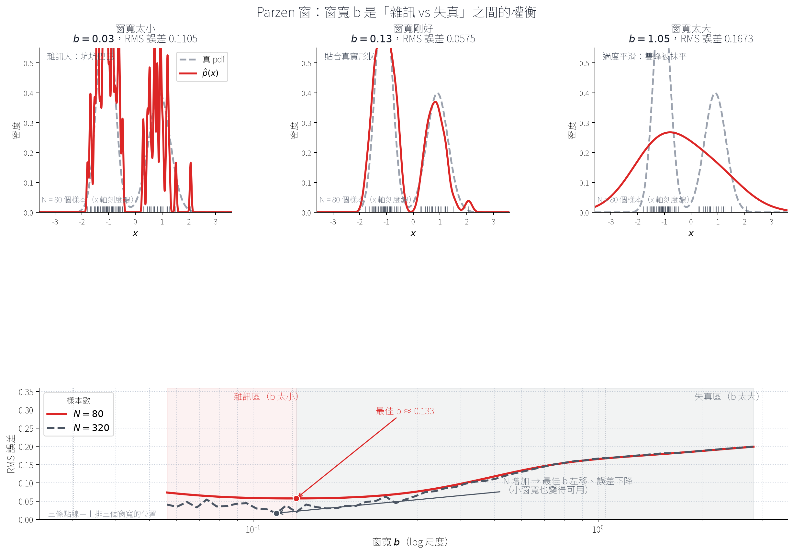
AI 生圖可用：重繪此示意圖的提示詞（結構化）
WHAT: Parzen 窗寬 b 的「雜訊 vs 失真」權衡圖——上排三格用「同一份雙峰真 pdf、同一批 N=80 樣本」，分別以窗寬太小 / 剛好 / 太大做高斯核密度估計並列；下排一張 RMS 誤差對窗寬的權衡曲線（log x 軸），N=80 與 N=320 兩條，標出最佳 b 與「雜訊區／失真區」。 WHY: 窗寬 b 是 Parzen 估計唯一的自由度，因果鏈是：b 太小 → 每個核太尖 → 只看到局部零星樣本 → 估計高變異、坑坑巴巴（雜訊）；b 太大 → 核把資訊抹平 → 低變異但高度偏誤（失真）。中間存在最佳 b。反直覺轉折：樣本數增加（80→320）不只降低誤差，還讓「最佳 b 左移」——小窗寬在資料多時也變得可用（課本「資料量增加能讓小 b 的估計也變光滑」的量化版）。原文五張圖分散講直方圖、φ 函數、抽樣效果，沒有一張把「同一份真 pdf、同一組樣本、三種窗寬」並排呈現權衡，本圖補這個缺口。 MUST show: 1. 上排三格共用同一批樣本（x 軸上的刻度線標出樣本位置），真 pdf 用灰虛線、估計用紅實線；子圖標題直接寫窗寬數值與 RMS 誤差，讓「太小=坑坑巴巴、剛好=貼合、太大=雙峰被抹平」一眼可見（數值須真的單調呈現 雜訊>貼合<失真）。 2. 下排 RMS 誤差曲線用 log x 軸，N=80 紅實線與 N=320 灰虛線兩條；陰影標出雜訊區（b<最佳）與失真區（b>最佳）；標出最佳 b 的位置與 N=320 時最佳 b 左移、誤差下降的箭頭。 3. 上排三個窗寬在下排曲線上的對應位置用點線標出（讀者能交叉對照）。 AVOID: 不要用「名詞連連看」方框圖；不要把三種窗寬的樣本數畫成不同（那樣對比不公平）；不要只用線性 b 軸（最佳窗寬在 0.01~1 跨兩個數量級）；不要宣稱 b 有單一「正確值」——最佳 b 依 N 與真 pdf 而定（圖中實測值約 0.13@N=80、0.12@N=320，僅為該範例之實測最佳）。 STYLE: 學術雙層版面（上 1×3 對比格 + 下 1×1 權衡曲線），白底、#dc2626 紅為估計與 N=80 曲線、灰階為真 pdf 與 N=320 對照，精準 RMS 標註，Noto Sans TC 中文字型。
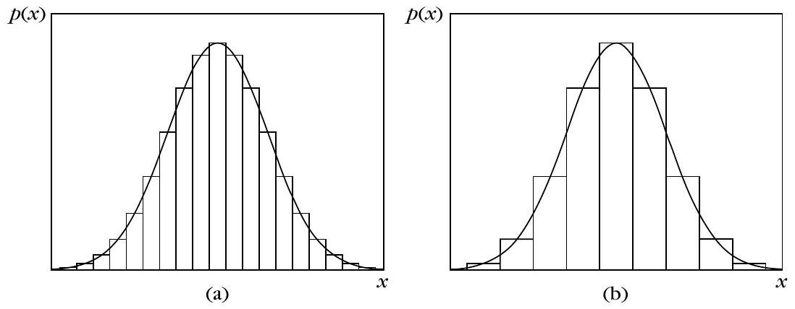
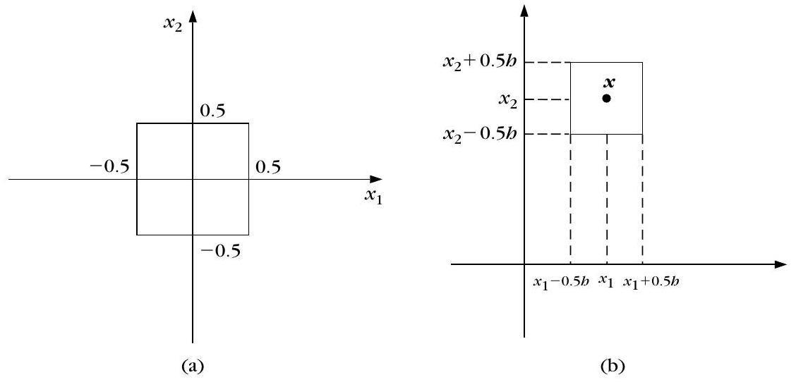
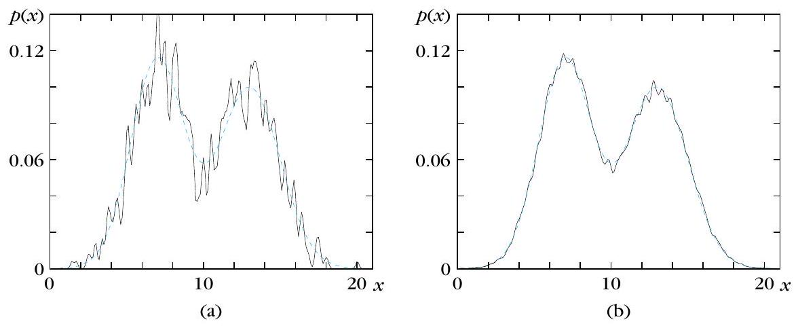
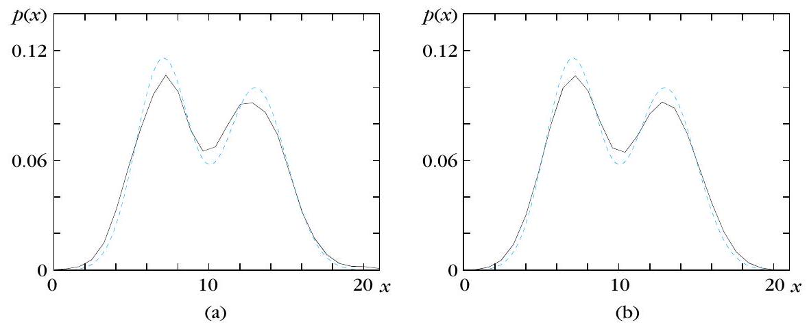
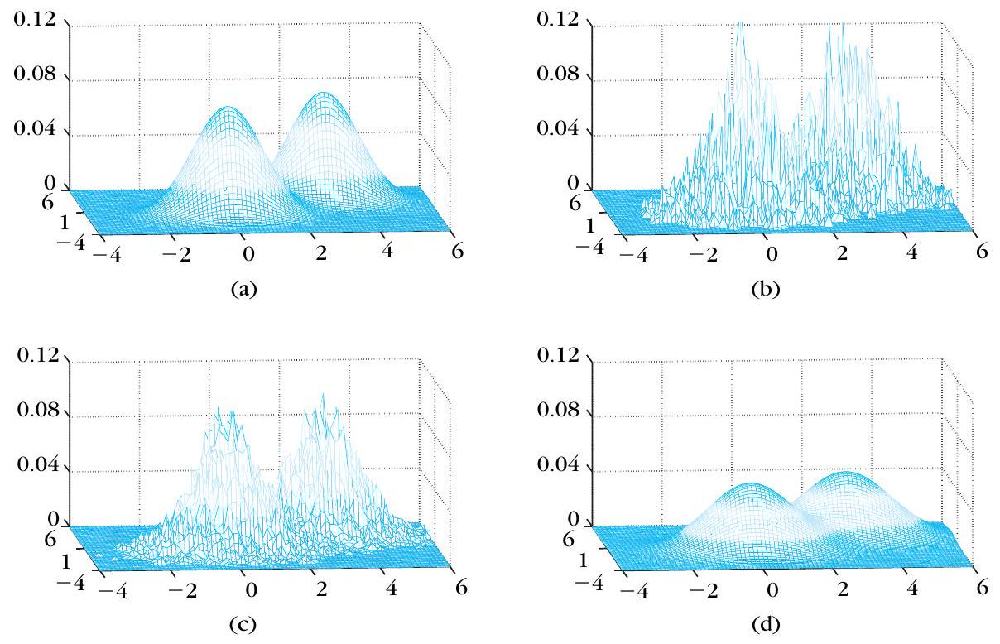
一句話：前面幾種方法都假設 pdf 有已知的參數形式（如高斯）；無母數估計（nonparametric estimation）完全不假設形式，直接從資料的「密集程度」反推 pdf 的形狀——最原始的做法就是大家熟悉的直方圖。
直方圖的邏輯：把一維空間切成寬度 $b$ 的小格（bin），若 $N$ 個樣本中有 $k_N$ 個落在某格，用頻率估計機率 $P\approx k_N/N$，該格內 pdf 近似常數 $$ \hat p(x)\approx\frac{1}{b}\cdot\frac{k_N}{N} $$ 要讓這個估計收斂到真值，需要三個條件同時滿足：格寬 $b_N\to 0$（切得夠細）、$k_N\to\infty$（每格樣本數仍要夠多）、$k_N/N\to 0$（但佔全體的比例要趨近 0）——這三者要同時成立，代表 $N$ 必須遠比格數成長得快。
Parzen 窗：把直方圖「拆」掉：把直方圖看成用不連續的方框函數 $\phi(\cdot)$ 去堆疊近似 pdf， $$ \hat p(\boldsymbol{x})=\frac{1}{b^l}\left(\frac{1}{N}\sum_{i=1}^{N}\phi\!\left(\frac{\boldsymbol{x}_i-\boldsymbol{x}}{b}\right)\right) $$ Parzen 的想法是：既然方框函數是不連續的「元凶」，不如換成平滑的核函數（kernel，只要 $\phi(\boldsymbol{x})\ge0$ 且積分為 1），最常見選高斯核 $\mathcal{N}(\boldsymbol{0},I)$——這樣 $\hat p(\boldsymbol{x})$ 就變成 $N$ 個高斯的平均，每個高斯都以一個訓練樣本為中心。
參數 $b$ 的雙面刃：
- $b$ 太小：每個核太「尖」，估計結果雜訊很大、看起來坑坑巴巴（除非 $N$ 極大）。
- $b$ 太大：估計結果很平滑，但可能抹平真實 pdf 的重要細節（高度偏誤）。
- 資料量固定時，$b$ 小需要更多樣本才能穩定；資料量增加能讓小 $b$ 的估計也變光滑。
維度詛咒的前奏：這種方法在高維空間會遇到嚴重問題——因為要「密集覆蓋」空間所需的樣本數會隨維度指數成長，這就是下一個知識點要談的維度詛咒。分類應用上，Parzen 估計代入概似比檢定，用兩類各自的核密度估計取代原本未知的 $p(\boldsymbol{x}\mid\omega_i)$，但計算量會隨訓練樣本數線性成長，$N$ 大時相當耗時。
操作說明與正確結果基準
2. $b$ 最優（約 $0.20 \sim 0.35$）：RMS 誤差達到全局最低；
3. $b$ 過大（如 $1.20$）：雙峰被抹平為大扁包（高偏誤/欠擬合）。
RMS 均方根誤差：$\text{RMS Error} = \sqrt{\dfrac{1}{x_B - x_A}\int_{x_A}^{x_B} \big(\hat{p}(x) - p(x)\big)^2 \,dx}$
真實分布為雙峰混合高斯 $0.5\,\mathcal{N}(-1.5, 0.4^2) + 0.5\,\mathcal{N}(1.5, 0.5^2)$。最優窗寬區間為 $b \approx 0.20 \sim 0.35$。
Parzen 窗方法中，若核函數的窗寬參數 $b$ 選得太小，估計出的 pdf 會有什麼現象？
維度詛咒與 k 近鄰密度估計
▼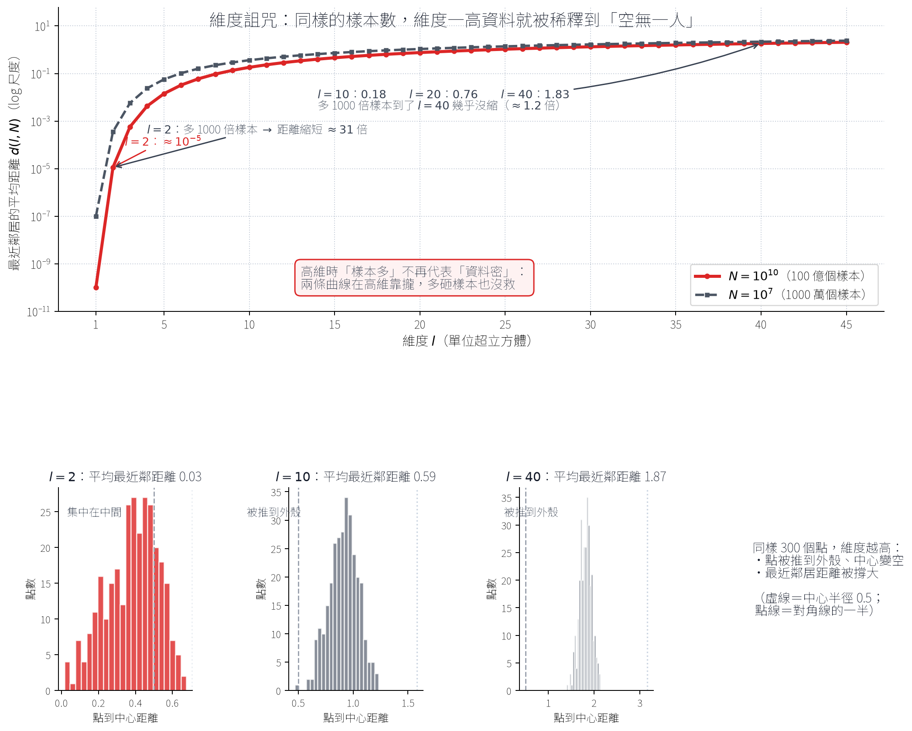
AI 生圖可用：重繪此示意圖的提示詞（結構化）
WHAT: 維度詛咒的趨勢圖——固定樣本數（N=10^10 與對照 N=10^7），特徵維度 l 從 1 一路升到 40~45，平均最近鄰距離 d(l,N) 的理論曲線（課本公式 $d(l,N)=2(l\Gamma(l/2)/(2\pi^{l/2}N))^{1/l}$），下方搭配三個小圖顯示「同樣 300 個點」在 l=2 / l=10 / l=40 的空間分布差異。
WHY: 全章最反直覺的概念——100 億個點在 2 維空間擠到最近鄰距離只有 $10^{-5}$，到 40 維卻被稀釋到距離 1.83（超過單位超立方體邊長的一半），空間「空曠無人」。原文 Figure 2.23 只對比 1D/2D，看不出隨維度指數惡化的震撼；本圖把趨勢延伸到 l=45，並加第二個反直覺轉折：把樣本數增加 1000 倍（10^7→10^10），低維時距離縮短約 31 倍、高維時幾乎沒縮——「多砸樣本救得了低維、救不了高維」。
MUST show:
1. 主圖 log y 軸兩條曲線：N=10^10（紅實線）與 N=10^7（灰虛線），annotate 課本數值 l=2（≈10^-5）、l=10（0.18）、l=20（0.76）、l=40（1.83），全部精準對齊曲線位置。
2. 標出「多 1000 倍樣本」的效益遞減對比（l=2 縮 31 倍 vs l=40 只縮 1.2 倍），並在曲線靠攏處註記「高維時樣本多不再代表資料密」。
3. 下方三格同數樣本分布圖（l=2 / 10 / 40，各 300 點）：高維時點被推到立方體外殼、中心空心、平均最近鄰距離被撐大（子圖標題標出具體距離數字）。
AVOID: 不要用線性 y 軸（10^-5 到 1.83 跨五個數量級，線性軸會把低維部分壓成 0 而看不出趨勢）；不要只放公式不放數值；不要畫 1D vs 2D 而已（那是課本圖，不是本圖的增值）；不要把「點對點最近鄰」蒙地卡羅數字與課本公式混為一談（不同統計量，常數差約 2 倍，圖中一律用課本公式畫曲線）。
STYLE: 學術資料視覺化，上主圖（log y 趨勢曲線）+ 下三格分布直方圖的組合版面，白底、#dc2626 紅為主曲線與強調、灰階對照曲線，精準 annotate，Noto Sans TC 中文字型。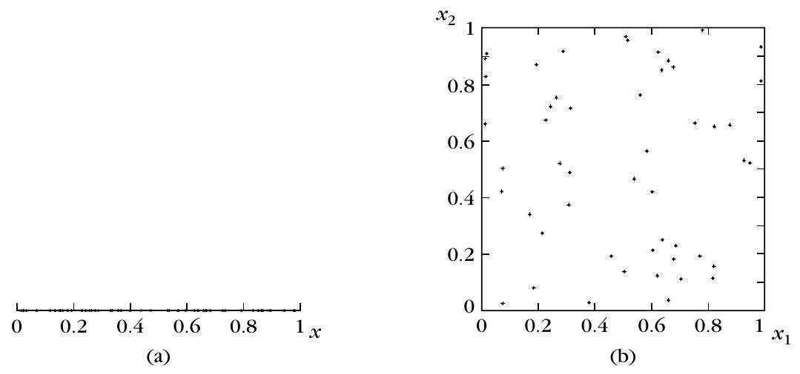
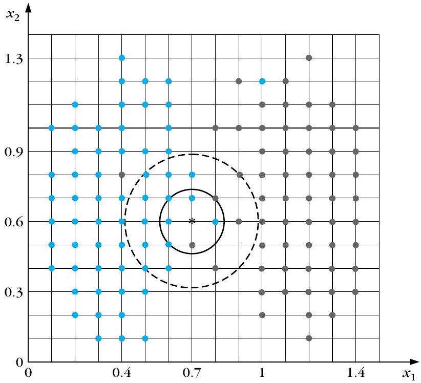
一句話：Parzen 窗把「體積固定、格內點數隨機變動」；k 近鄰密度估計（kNN density estimation）反過來——固定要包住的點數 $k$，讓體積隨資料密度自動伸縮：資料密的地方體積小、資料疏的地方體積自動變大。
公式： $$ \hat p(\boldsymbol{x})=\frac{k}{N\,V(\boldsymbol{x})} $$ $V(\boldsymbol{x})$ 是「以 $\boldsymbol{x}$ 為中心、恰好包住 $k$ 個訓練點」的體積（可以是超球、超橢球等）。用在兩類分類時，比較兩類各自算出的體積比： $$ \frac{V_2}{V_1}\ \gtrless\ \frac{N_1}{N_2}\cdot\frac{P(\omega_2)}{P(\omega_1)}\cdot\frac{\lambda_{21}-\lambda_{22}}{\lambda_{12}-\lambda_{11}} $$
數值範例：待分類點 $(0.7,0.6)$，$k=5$。在類別 $\omega_2$（紅點）中找到 5 個最近鄰，最遠的距離 $\rho=\sqrt{0.1^2+0.1^2}=0.1\sqrt2$，包住它們的圓面積 $V_2=\pi\rho^2$；在 $\omega_1$（黑點）中，5 個最近鄰的半徑是 $2\rho$，面積 $V_1=4\pi\rho^2$。兩類點數 $N_1=59,N_2=61$（近乎相等）。算比值 $V_2/V_1=\pi\rho^2/4\pi\rho^2=0.25$，小於 $N_1/N_2\approx59/61\approx0.967$，所以判給 $\omega_2$——直覺解讀：$\omega_2$ 只用一個小圓就包住了 5 個鄰居（代表這裡 $\omega_2$ 的點很密集），$\omega_1$ 卻要用大 4 倍的圓才湊到 5 個（代表這裡 $\omega_1$ 的點很稀疏）——密度較高的那一類獲勝。
維度詛咒（curse of dimensionality）：在 $l$ 維單位超立方體裡隨機灑 $N$ 個點，一個點到最近鄰的平均歐氏距離是 $$ d(l,N)=2\left(\frac{l\,\Gamma(l/2)}{2\pi^{l/2}N}\right)^{1/l} $$ 固定 $N=10^{10}$，$l=2,10,20,40$ 時 $d(l,N)$ 分別約 $10^{-5},0.18,0.76,1.83$——同樣是 100 億個點，在 2 維空間擠得要命，到了 40 維卻近乎「空曠無人」！這就是所有無母數方法（Parzen、kNN）在高維空間表現變差的根本原因：要「填滿」空間所需的樣本數隨維度指數成長，這正是「維度詛咒」一詞的由來（Bellman 在控制理論中最早提出）。
操作說明與正確結果基準
2. 10D 時：$d(10, 10^7) \approx 0.65$，單元已佔據空間邊長的 65%；
3. 30D+ 時：即使樣本高達一百億點，$d(30, 10^{10}) > 1.0$，資料點在空間中無影無蹤。
對數域極高精度解算：$\ln d(l, N) = \ln 2 + \dfrac{1}{l}\left[\ln l + \ln\Gamma(l/2) - \ln 2 - \dfrac{l}{2}\ln\pi - \ln N\right]$
其中 $N_1 = 10^7$（一千萬點）與 $N_2 = 10^{10}$（一百億點）。當 $l \ge 10$ 時，$d(l, N)$ 快速跨過 $0.5$，證明無母數密度估計高維失效。
k 近鄰密度估計與 Parzen 窗最主要的差異是什麼？
在同樣有 100 億個隨機點的情況下，為什麼 40 維空間裡「最近鄰居的平均距離」遠比 2 維空間大得多？
單純貝氏分類器：假裝所有特徵互相獨立
▼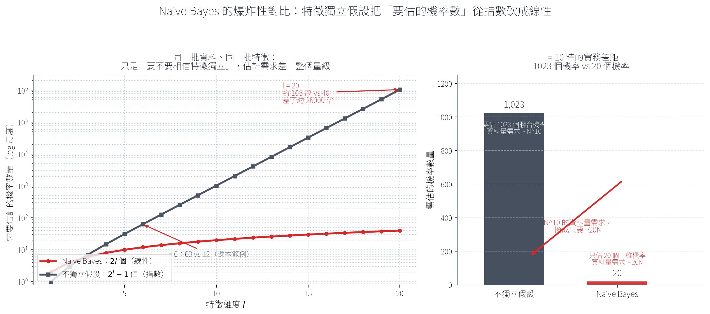
AI 生圖可用：重繪此示意圖的提示詞（結構化）
WHAT: Naive Bayes 特徵獨立假設對「需估計機率數量」的指數 vs 線性爆炸性對比圖。左圖：特徵維度 l=1..20 時，不獨立假設需 $2^l-1$ 個聯合機率（指數成長，log 尺度曲線），獨立假設只需 $2l$ 個（線性，貼近底部）；右圖：固定 l=10 的數量級實例對比（1023 vs 20）。
WHY: 不獨立時要為 $2^l$ 種特徵組合各估一個機率，資料需求達 $N^l$ 等級，隨維度指數爆炸；獨立假設把聯合密度拆成 $l$ 個一維邊際密度，資料需求降到約 $2lN$。這是全章最適合「爆炸性對比」的知識點——差距不是幾倍，是數量級，課本原無任何配圖。
MUST show:
1. 同一條維度軸上兩條曲線：$2^l-1$（指數、明顯甩開）vs $2l$（線性、貼底），y 軸取 log 才能同框顯示。
2. 精確數字註記：l=6 課本範例 63 vs 12；l=10 時 1023 vs 20（差 51 倍）；l=20 時 1,048,575 vs 40（差約 26,000 倍）。
3. l 很小（l≈1-2）時兩條線幾乎貼在一起、獨立假設沒占到便宜的「轉折點」註記，指數曲線從 l≈3 開始正式甩開。
4. 右圖以 l=10 固定，用一根被壓垮的巨大長條 vs 一根短條，直接呈現 1023 vs 20 的爆炸性差距，並標註資料需求從 $N^{10}$ 變成約 $20N$。
AVOID: 不要只畫公式不畫數值；不要把兩條線放在線性 y 軸（指數曲線會把線性曲線壓成一條貼地直線而看不出對比）；不要用不實的差距數字（2l 才是公式，課本的 13 是舊版文字）。
STYLE: 學術資料視覺化雙子圖，白底、#dc2626 紅為獨立假設曲線與強調色、灰階為不獨立曲線，log 軸折線 + 對數坐標，annotate 精準數字，中文字型 Noto Sans TC。一句話：$l$ 維聯合機率密度的估計，所需資料量會隨 $l$ 指數成長（$N^l$ 等級）——單純貝氏分類器（Naive Bayes）用一個大膽但實用的假設繞開這個問題：假設所有特徵互相統計獨立。
假設與結果：獨立假設下，聯合密度可以拆成各特徵獨立密度的乘積 $$ p(\boldsymbol{x}\mid\omega_i)=\prod_{j=1}^{l}p(x_j\mid\omega_i) $$ 分類規則變成 $$ \omega_m=\arg\max_{\omega_i}\prod_{j=1}^{l}p(x_j\mid\omega_i) $$ 代價與收益的置換：不做獨立假設時，估計 $l$ 維聯合密度大約需要 $N^l$ 等級的資料；獨立假設下，只需要估計 $l$ 個一維密度，資料需求降到約 $lN$ 等級——用「可能不完全正確的假設」換來「大幅減少所需資料量」，在維度稍高、資料有限的實務場景中，這個交換往往非常划算。有趣的是，即使真實特徵並非完全獨立，Naive Bayes 在許多實際資料集上依然表現得很穩健。
離散特徵的例子：$l$ 個二元特徵 $x_i\in\{0,1\}$，令 $P(x_i=1\mid\omega_1)=p_i$、$P(x_i=1\mid\omega_2)=q_i$。不做獨立假設時，$\boldsymbol{x}$ 共有 $2^l$ 種組合，需要 $2^l-1$ 個機率估計；獨立假設下，只需要 $2l$ 個（$p_i$ 與 $q_i$ 各 $l$ 個）。取對數整理概似比檢定，會發現它正好化簡成線性判別函數： $$ g(\boldsymbol{x})=\boldsymbol{w}^T\boldsymbol{x}+w_0,\qquad w_i=\ln\frac{p_i(1-q_i)}{q_i(1-p_i)} $$ ——這跟前面「等共變異數高斯」推出的超平面分類器，數學形式上是同一家人，只是這裡的線性性來自「特徵獨立」假設，而不是「共同共變異數」假設。怎麼記：Naive Bayes 犧牲了「考慮特徵間相關性」的精確度，換回了「資料需求量從指數變線性」的巨大實務優勢。
Naive Bayes 分類器的核心假設是什麼？
最近鄰居法則：不估計密度，直接投票
▼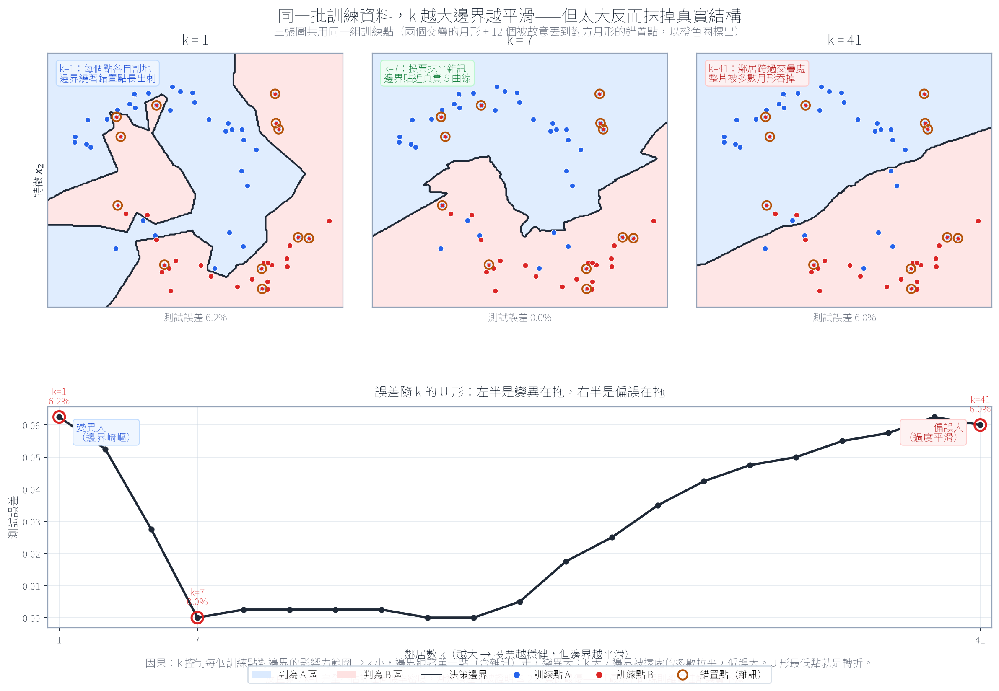
AI 生圖可用：重繪此示意圖的提示詞（結構化）
WHAT: Draw a wide matplotlib figure with two stacked zones. The top zone has three side-by-side panels that ALL share the exact same 2-D training scatter: two interleaving half-moons (an upper moon and a lower moon whose tips overlap), plus twelve "noise" points planted inside the opposite moon (ringed in orange). Each panel shows the kNN decision regions (light blue vs light red fills) and the black decision boundary for one value of k: k=1 on the left, k=7 in the middle, k=41 on the right. The bottom zone is a single line chart of test error versus k (odd values 1 through 41), with the three panel k-values ringed in red on the curve. The curve must be visibly U-shaped with the minimum near k=7. WHY: The causal mechanism is that k controls how far each training point's influence reaches. Small k makes the boundary follow individual points (including noise), so the boundary grows jagged spurs around each noise point -- that is variance. Large k makes the neighbourhood reach across the interlocking moon tips, so the boundary straightens and one moon swallows the other -- that is bias. The counter-intuitive turn is the U-shape itself: increasing k first HELPS (kills noise) then HURTS (erases real structure), and the sweet spot in the middle is not a mediocre compromise but the minimum-error point. A second counter-intuitive note: k=1 estimates no density at all, yet its asymptotic error is provably at most 2x Bayes-optimal. MUST show: - Three boundary panels using the SAME training points, so the only thing changing between panels is k. - Jagged, spur-covered boundary at k=1 with visible wrong-color islands around the ringed noise points. - A clean boundary at k=7 that follows the S-curve between the two moons. - An over-smoothed, nearly straight boundary at k=41 that lets one moon's region flood across the other. - A U-shaped error-vs-k curve below, with k=1, k=7, k=41 marked, so the turning point (variance-dominated left, bias-dominated right) is explicit. - The twelve noise points ringed in a distinct color so the reader sees what k=1 is overfitting to. - Light red (#dc2626 family) for one class region, light blue for the other, grayscale ink for boundaries and axes. AVOID: Do not draw three unrelated datasets. Do not make the U-curve monotonic (that hides the whole point). Do not use a linearly separable dataset where large k never over-smooths (the U would never appear). Do not label the panels with only the word "overfit/underfit" -- the boundary SHAPE must show it. Do not omit the noise points; without them k=1 has nothing to overfit. Do not use external images, icons, or non-Chinese fonts for the Chinese labels. STYLE: Clean offline matplotlib PNG, white background, Noto Sans TC registered by file path for Chinese, DejaVu Sans for math, #dc2626 accent with grayscale, restrained typography, textbook-level clarity, generous whitespace, 180 dpi.
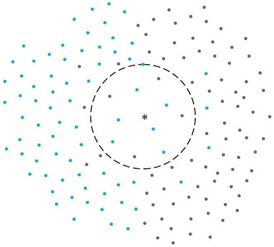
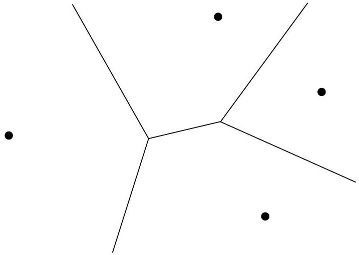
一句話：k 近鄰分類規則（kNN classifier）是 k 近鄰密度估計的一個變形，但目標不同——它不是要估出 $\hat p(\boldsymbol{x})$，而是直接讓「$\boldsymbol{x}$ 周圍最近的 $k$ 個訓練樣本」投票決定類別，是套用範圍極廣的非線性、非貝氏框架分類器（但表現常常逼近貝氏最優解）。
演算法三步驟：① 從全部 $N$ 個訓練向量中，不分類別地找出離未知樣本 $\boldsymbol{x}$ 最近的 $k$ 個（$k$ 通常取奇數，且不要是類別數 $M$ 的倍數，避免平手）；② 數出這 $k$ 個鄰居裡各類別各有幾個 $k_i$（$\sum_i k_i=k$）；③ 把 $\boldsymbol{x}$ 分給 $k_i$ 最多的那一類。
特例：$k=1$（最近鄰居法則 NN）：直接分到「離它最近的那一個訓練樣本」所屬的類別。理論上可證明，當 $N\to\infty$，NN 規則的誤判機率 $P_{NN}$ 被貝氏最優誤判機率 $P_B$ 夾在 $$ P_B\le P_{NN}\le P_B\!\left(2-\frac{M}{M-1}P_B\right)\le 2P_B $$ ——也就是說，最簡單、完全不用估計任何機率密度的 NN 規則，漸進誤判率最多只是最優貝氏分類器的兩倍！這是一個相當驚人的結果。更一般的 $k$NN，誤差上界是 $P_B\le P_{kNN}\le P_B+\frac{1}{\sqrt{ke}}$，$k$ 越大越逼近貝氏最優；例如貝氏誤差 1% 時，3NN 的誤差約只有 $1.03\%$，幾乎跟最優解一樣好。
幾何直覺（Voronoi tessellation）：當 $k=1$ 時，每個訓練樣本 $\boldsymbol{x}_i$ 各自「佔據」一塊區域 $R_i=\{\boldsymbol{x}: d(\boldsymbol{x},\boldsymbol{x}_i)\lt d(\boldsymbol{x},\boldsymbol{x}_j),\ i\ne j\}$——空間被切成 $N$ 塊多邊形，每塊裡的任何點都離該塊中心樣本最近，這種切法叫 Voronoi 鑲嵌。
代價：kNN 沒有「訓練」階段，但每次要分類新樣本，都得跟全部 $N$ 個訓練樣本算一次距離（複雜度 $O(kN)$），$N$ 大或維度高時計算負擔沉重；實務上常搭配高效搜尋結構或「原型精簡（prototype editing/condensing）」技術先精簡訓練集。此外 kNN 的漸進最優性只在 $N$ 夠大時成立，$N$ 較小時表現可能明顯遜色。
操作說明與正確結果基準
- 這在做什麼：固定一批兩類 2D 訓練資料（兩個交疊月形 + 少量錯置點），對畫布上每個網格點用 k 近鄰投票決定該點屬於哪一類，重繪決策邊界底色。
- 怎麼操作：拖動滑桿調整 k（只取奇數，避免平手）。每次調整後，邊界底色、測試誤差、誤差曲線上的位置都會即時更新。
- 觀察什麼：k 很小時邊界崎嶇、繞著錯置點長出刺（過擬合雜訊）；k 很大時邊界被推平、整片被多數類吞掉（欠擬合）。誤差隨 k 呈 U 形——先降後升，中間有最低點。
- 正確結果基準：每個網格點的分類由真實投票算出（不是近似）；測試誤差用 200 個固定測試點的真實投票結果計算。下方公式為理論上界，可與實際誤差對照。
誤差上界：$P_B \le P_{kNN} \le P_B + \dfrac{1}{\sqrt{ke}}$（$P_B$ 為貝氏最優誤差）。
$k{=}1$ 特例：$P_B \le P_{NN} \le 2P_B$——完全不估計密度，誤差最多是最優解的兩倍。
拖動滑桿驗證：$k$ 小 → 變異大（邊界崎嶇）；$k$ 大 → 偏誤大（邊界過度平滑）；U 形最低點是轉折。
最近鄰居法則（$k=1$ NN）在 $N\to\infty$ 時，其誤判機率 $P_{NN}$ 跟貝氏最優誤判機率 $P_B$ 的關係為何？
貝氏網路（一）：用機率鏈鎖規則做「部分獨立」的折衷
▼AI 生圖可用：重繪此示意圖的提示詞（結構化）
WHAT: Draw a wide self-contained SVG infographic with three side-by-side panels sharing the same six binary features (x1..x6). The left panel shows six isolated nodes with zero edges (Naive Bayes, full independence). The middle panel shows a directed acyclic graph with six real dependency edges (x1,x2 -> x4; x2 -> x3; x4 -> x5; x4,x5 -> x6) and is highlighted with a red border. The right panel shows the same six nodes as a complete graph with all fifteen edges forming a dense hairball. Below each panel, a vertical bar whose height is proportional to the number of probability values that approach must estimate: a tiny bar (6) under Naive Bayes, a small bar (13) under the Bayesian network, and a huge bar (63) under no-assumption. A bold red arrow points from the 63 bar back to the 13 bar labeled "5x fewer"; a thin gray arrow points from 13 to 6 labeled "saves only 7, but assumes full independence". A horizontal axis runs under all three panels going from "strongest independence assumption" on the left to "no assumption" on the right, with the middle marked as the "sweet spot". WHY: The causal mechanism is that every independence assumption removes parameters: the real dependencies in practice are sparse, so keeping only the real edges (Bayesian network) eliminates most of the wasted parameters while preserving fidelity. The counter-intuitive turn is that the middle is NOT a mediocre compromise -- the parameter count drops 5x from 63 to 13 with almost no fidelity loss, but dropping the last 13 to 6 (Naive Bayes) saves only 7 more parameters while forcing ALL edges to be ignored, so when features are actually correlated the fidelity crashes. The sweet spot is where the marginal cost of one more assumption starts exceeding its parameter saving -- the knee of the tradeoff. MUST show: - Three dependency graphs with visibly different edge density: zero, six directed edges, fifteen edges forming a hairball. The density gradient itself must carry the meaning, not just text labels. - Three bars whose heights are dramatically different (tiny, small, huge) so the 5x reduction is visible as geometry, not as a number. - The middle panel visually highlighted (red border, accent fill) as the sweet spot, more prominent than the two extremes. - A bold reduction arrow from 63 to 13 (the big win) and a thin, warning- toned arrow from 13 to 6 (the small saving with a big caveat). - A horizontal axis placing the three approaches on a spectrum from "strongest assumption" to "no assumption". - Even with all text masked: edge density 0 -> sparse -> dense, bar height tiny -> small -> huge, middle highlighted -- the story reads from the geometry alone. AVOID: Do not draw three boxes with nouns and connecting lines (that is the forbidden noun-connecting game). Do not make the three bars similar in height (that hides the 5x point). Do not present Naive Bayes and no-assumption as equally good extremes with the Bayesian network as a bland average. Do not omit the complete-graph hairball -- without it the "curse of dimensionality" extreme is invisible. Do not use external images, fonts, or resources. STYLE: Clean offline SVG scientific infographic, logical viewBox coordinates, white and light-gray background, #dc2626 accent with grayscale, crisp arrows, semantic groups, restrained typography, textbook-level clarity.
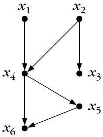
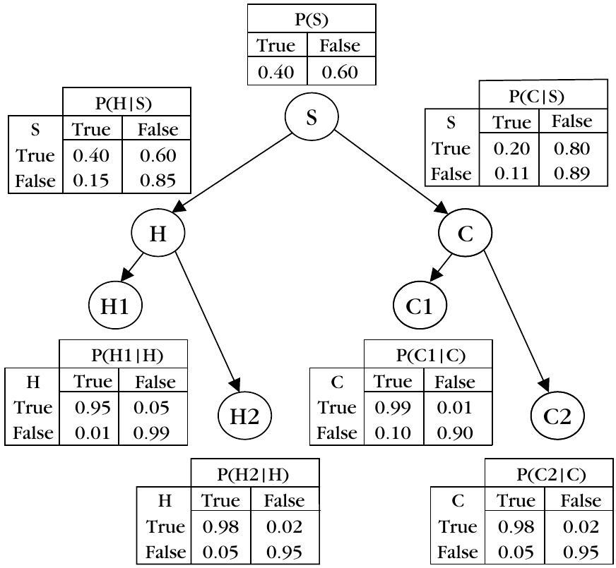
一句話：Naive Bayes 假設所有特徵完全獨立是一個極端，完全不做任何獨立假設又會撞上維度詛咒——貝氏網路（Bayesian Network）提供一條中間路線：只假設部分的條件獨立關係，並且用一張圖清楚畫出誰依賴誰。
起點：機率鏈鎖規則：任何聯合機率密度都可以無條件拆解成連乘的條件機率 $$ p(x_1,\dots,x_l)=p(x_l\mid x_{l-1},\dots,x_1)\cdots p(x_2\mid x_1)p(x_1) $$ 這個規則永遠成立，跟特徵排列順序無關，但目前為止還沒有節省任何計算——貝氏網路的關鍵一步，是假設每個 $x_i$ 只依賴前面特徵裡的一個子集合 $A_i$（不是全部前面的特徵），簡化成 $$ p(\boldsymbol{x})=p(x_1)\prod_{i=2}^{l}p(x_i\mid A_i),\qquad A_i\subseteq\{x_{i-1},\dots,x_1\} $$
數值範例（節省多少）：6 個二元特徵，若完全不做獨立假設，要估計 $2^l-1=63$ 個機率值；若假設 $A_6=\{x_5,x_4\},A_5=\{x_4\},A_4=\{x_2,x_1\},A_3=\{x_2\},A_2=\emptyset$（$A_1$ 不需要，$x_1$ 是根節點），總共只需要估計 13 個機率值——省下超過 5 倍。這些依賴關係可以直接畫成一張有向無環圖（DAG, Directed Acyclic Graph）：節點是特徵，$A_i$ 裡的每個成員都有一條指向 $x_i$ 的箭頭，稱為 $x_i$ 的「父節點」。
正式定義：貝氏網路＝一張 DAG，每個節點對應一個隨機變數，並附帶一組條件機率 $P(x_i\mid A_i)$（$A_i$ 是它在圖中的父節點集合）。「無環」代表圖中不能有箭頭繞成一圈；只要給出（a）根節點（無父節點者）的邊際機率、（b）每個非根節點在「所有父節點組合」下的條件機率，就能靠拓樸排序把整張圖的聯合機率算出來。
條件獨立的微妙之處：$p(x_3\mid x_2,x_1)=p(x_3\mid x_2)$ 不代表 $x_3$ 與 $x_1$ 兩兩獨立！它們可能在不知道 $x_2$ 的情況下是相關的，只有在 $x_2$ 的值被揭露之後才會變得條件獨立——量到一個變數的值，會消耗掉一部分隨機性、進而改變其餘變數之間的依賴關係。
實例（醫療診斷）：一個描述吸菸（S）、肺癌（C）、心臟病（H）及對應醫學檢測（H1、H2、C1、C2）的貝氏網路——根節點是「是否吸菸」的母體比例，往下每一層是「條件機率表」，例如 $P(C{=}\text{True}\mid S{=}\text{True})=0.20$ 代表吸菸者得肺癌的機率。Naive Bayes 正好是貝氏網路的一個特例：$A_i=\emptyset,\ i=2,\dots,l$（沒有任何父節點依賴），退化回完全獨立。
貝氏網路的圖形結構「有向無環圖（DAG）」中，「無環」具體是指什麼？
$p(x_3\mid x_2,x_1)=p(x_3\mid x_2)$ 這個條件獨立關係，是否代表 $x_3$ 與 $x_1$ 兩者互相獨立？
貝氏網路（二）：機率推論——順著圖傳遞訊息
▼AI 生圖可用：重繪此示意圖的提示詞（結構化）
WHAT: Draw a wide self-contained SVG infographic of a four-node directed chain x -> y -> z -> w (all binary variables). Show TWO message flows on the same chain: a downstream flow above the chain (red, arrows pointing right) and an upstream flow below the chain (blue, arrows pointing left). Each node has a small conditional-probability-table (CPT) box hanging below it. The downstream arrows carry the actual computed values from the textbook example: P(y=1|x=1)=0.4, P(z=1|x=1)=0.46, P(w=0|x=1)=0.63, each with the arithmetic that produced it (0.25*0.4+0.6*0.6 etc.). The upstream arrows carry P(z=1|w=1)=0.57 and the final P(x=0|w=1)=0.4. Two evidence badges mark x=1 (left end, for downstream) and w=1 (right end, for upstream). At the top, a struck-through dashed arc spans the whole chain labeled "brute force: sum over all y,z combinations (L^5)" with a red X. WHY: The causal mechanism is that each station caches its outgoing message, so the next station never re-derives the whole chain -- it just multiplies the incoming number by its own local CPT and sums over its own variable. The counter-intuitive turn is that the direction of evidence does not change the cost: whether the evidence is at the upstream end (predict downstream) or the downstream end (infer upstream), the same station-by- station relay works, just with the arrows reversed. A second counter- intuitive point: computing P(w|x) naively looks like it needs summing over all combinations of the intermediate variables y and z, but message passing collapses that to one multiplication per station. MUST show: - The four-node chain with directed structural edges (gray, pointing right). - Two visibly distinct message flows on the same chain: red downstream arrows above, blue upstream arrows below, pointing in opposite directions. - The actual numerical message values on every arrow (0.4, 0.46, 0.63 downstream; 0.57 and 0.4 upstream) with the local arithmetic that produced each, so the reader can verify. - A CPT box attached to each node showing its local conditional probability table -- this is the ONLY thing each station reads besides the incoming message. - Two evidence badges (x=1 and w=1) at the two ends, showing that evidence can enter at either end. - A struck-through brute-force arc spanning the whole chain, contrasted with the cheap station-by-station hops, so the efficiency gain is geometric. - Even with all text masked: a chain with two opposite-direction arrow flows on it, each arrow emerging from a node plus an attached box, and a crossed-out long arc versus short hops -- the "relay, don't recompute" story reads from the geometry. AVOID: Do not draw the chain as four noun-boxes connected by lines with no message values (that is the forbidden noun-connecting game). Do not show only one direction of message flow (the bidirectional point is half the lesson). Do not omit the CPT boxes -- without them the "each station only reads its local table" mechanism is invisible. Do not invent probability values not in the source text. Do not make the brute-force contrast a text footnote; the crossed-out long arc must be a visible geometric element. Do not use external images, fonts, or resources. STYLE: Clean offline SVG scientific infographic, logical viewBox coordinates, white and light-gray background, #dc2626 accent for downstream, a muted blue for upstream, grayscale for structure, crisp arrows, semantic groups, restrained typography, textbook-level clarity.
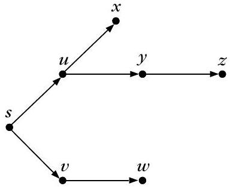
一句話：貝氏網路蓋好之後，最常見的任務是機率推論（probability inference）：已知某些節點的觀察值（證據），推算其他節點的條件機率——貝氏網路的圖形結構讓這件事可以用「訊息沿著邊傳遞」的方式，用遠比暴力法快的計算量完成。
簡單鏈狀網路的數值範例：一條鏈 $x\to y\to z\to w$，全部是二元變數。已知 $P(x{=}1)=0.6$，以及各節點在父節點給定值下的條件機率（例如 $P(y{=}1\mid x{=}1)=0.4$、$P(z{=}1\mid y{=}1)=0.25$、$P(w{=}1\mid z{=}1)=0.45$……）。
情境 (a)：觀察到 $x{=}1$，求 $P(z{=}1\mid x{=}1)$ 與 $P(w{=}0\mid x{=}1)$——訊息由 $x$ 往下游傳遞： $$ P(z{=}1\mid x{=}1)=P(z{=}1\mid y{=}1)P(y{=}1\mid x{=}1)+P(z{=}1\mid y{=}0)P(y{=}0\mid x{=}1)=(0.25)(0.4)+(0.6)(0.6)=0.46 $$ 接著 $P(z{=}0\mid x{=}1)=1-0.46=0.54$，再往下一站傳給 $w$： $$ P(w{=}0\mid x{=}1)=(0.55)(0.46)+(0.7)(0.54)=0.63 $$ 每一步都只需要「上一站傳來的機率」加上「這一站自己的條件機率表」，不需要重新回頭看整條鏈——這正是效率的來源。
情境 (b)：觀察到 $w{=}1$（反過來，證據在下游），求 $P(x{=}0\mid w{=}1)$——這次訊息要反向由下往上傳遞，先算 $P(z{=}1\mid w{=}1)=\dfrac{P(w{=}1\mid z{=}1)P(z{=}1)}{P(w{=}1)}=\dfrac{(0.45)(0.47)}{0.37}=0.57$，再一路傳回 $y$、最後傳回 $x$，得到 $P(x{=}0\mid w{=}1)=0.4$。重點：不管證據在鏈的哪一端，都可以用「下傳」與「上傳」兩種訊息傳遞完成整個推論，不必每次都重新計算整條鏈的聯合機率。
更一般的網路：分解求和降低複雜度：對樹狀網路（如節點 $s,u,v,x,y,w,z$），暴力計算 $P(s\mid z{=}z_0)$ 需要對其餘 5 個變數做邊際化，若每個變數有 $L$ 種取值，暴力法要 $L^5$ 次運算；但利用圖的結構把求和「往內」分配（先對 $w$ 求和、再對 $x,y$、最後才對 $u,v$），可以把總運算量壓到 $L^2$ 量級——這就是「把一個龐大的總和拆成一串局部小總和相乘」的精神，跟前面訊息傳遞的例子是同一個道理，只是推廣到更複雜的拓樸。單一連通（任兩節點間最多一條路徑）的網路，這類演算法的複雜度對節點數是線性的；但對於多重連通的一般網路，機率推論已被證明是 NP-hard，只能仰賴近似解法。
訓練：貝氏網路的訓練分兩部分——先決定圖的拓樸（可以是專家指定，也可以用最佳化技術從訓練資料學出來），拓樸確定後，各節點的條件機率表就用訓練資料裡的出現頻率（或更精緻的估計技術）估計出來。
操作說明與正確結果基準
- 這在做什麼：固定一條鏈狀貝氏網路 $x\to y\to z\to w$（二元變數，條件機率表已給）。點擊任一節點設為證據（觀察值 0 或 1），畫面即時算出其他三個節點的條件機率，並用箭頭標出訊息傳遞方向。
- 怎麼操作：點擊節點循環切換證據值（無 $\to$ 0 $\to$ 1 $\to$ 無）。紅色箭頭是下傳（往下游預測），藍色箭頭是上傳（往上游歸因）。
- 觀察什麼：證據在 $x$ 時訊息往下傳；在 $w$ 時往上傳；在中間節點（$y$ 或 $z$）時同時往兩端傳。每一站只需「上一站傳來的數 + 自己的 CPT」，不必重算整條鏈。
- 正確結果基準：本 demo 用精確枚舉法（16 種聯合組態）計算，結果與訊息傳遞完全一致。可用原文兩個情境驗證：$x{=}1$ 時 $P(z{=}1|x{=}1)=0.46$、$P(w{=}0|x{=}1)=0.63$；$w{=}1$ 時 $P(z{=}1|w{=}1)=0.57$、$P(x{=}0|w{=}1)=0.40$。
下傳（證據在上游）：$P(z|x)=\sum_y P(z|y)\,P(y|x)$，逐站把上一站的機率乘上自己的 CPT 再求和。
上傳（證據在下游）：$P(z|w)=\dfrac{P(w|z)\,P(z)}{P(w)}$（貝氏定理反推），$P(w)=\sum_z P(w|z)\,P(z)$。
效率來源：訊息被快取在每一站，下一站不必回頭看整條鏈。
在鏈狀貝氏網路 $x\to y\to z\to w$ 中，若證據觀察到的是最下游節點 $w$，要推算最上游節點 $x$ 的條件機率，訊息應該怎麼傳遞？
在樹狀貝氏網路中，利用圖結構把 $L^5$ 量級的暴力求和分解成一串局部求和，可以把複雜度降到什麼量級？